B3_flowkit · Opus 5.5 · attempt TBYg9AP
Batch fk1 · job fk1_B_EXP22004363_run1_221202_flowkit_claude-opus-5-5 · trial B_EXP22004363_run1_221202_flowki__TBYg9AP. Long tool outputs are cut at 6,000 characters.
Score
0.60
0.60
Minutes
17.1
17.1
Agent cost
$4.08
$4.08
Steps
180
180
Screenshots / images
13
13
2
tool call · Bash
cd /task; ls -la inputs inputs/raw | head -20; cat inputs/plan.md; cat inputs/plate_layout.csv
3
tool output
inputs: total 28 dr-xr-xr-x 3 root root 4096 Nov 10 16:58 . drwxr-xr-x 4 root root 4096 Nov 10 16:59 .. -r--r--r-- 1 root root 6547 Nov 10 16:58 plan.md -r--r--r-- 1 root root 6889 Nov 10 16:58 plate_layout.csv dr-xr-xr-x 2 root root 4096 Nov 10 16:58 raw inputs/raw: total 113516 dr-xr-xr-x 2 root root 4096 Nov 10 16:58 . dr-xr-xr-x 3 root root 4096 Nov 10 16:58 .. -r--r--r-- 1 root root 1637256 Nov 10 16:58 Caspase-assay-2-mlk_caspase_Group_A1.fcs -r--r--r-- 1 root root 2207696 Nov 10 16:58 Caspase-assay-2-mlk_caspase_Group_A10.fcs -r--r--r-- 1 root root 2263752 Nov 10 16:58 Caspase-assay-2-mlk_caspase_Group_A11.fcs -r--r--r-- 1 root root 1605848 Nov 10 16:58 Caspase-assay-2-mlk_caspase_Group_A12.fcs -r--r--r-- 1 root root 2096988 Nov 10 16:58 Caspase-assay-2-mlk_caspase_Group_A2.fcs -r--r--r-- 1 root root 2469724 Nov 10 16:58 Caspase-assay-2-mlk_caspase_Group_A3.fcs -r--r--r-- 1 root root 1728308 Nov 10 16:58 Caspase-assay-2-mlk_caspase_Group_A4.fcs -r--r--r-- 1 root root 1826276 Nov 10 16:58 Caspase-assay-2-mlk_caspase_Group_A5.fcs # EXP22004363 | 2022.11.28 Caspase Activity Assay Dev: Progranulin Conditioned Media This is the notebook entry text up to flow acquisition on 2022-12-02. People's names have been removed. - **Tags:** Target PGRN; Technology Assay development; Model System Cell based; Methodology Flow; Cell Type H4. - **Plate maps:** shown below as grids (rows A-H, columns 1-12). Empty cells are blank. - **Highlight colours:** the notebook encodes conditioned-media treatment by highlight colour. The colours are listed at the end. ## DAY 2022-11-28 ### Purpose To determine if progranulin conditioned media can restore wild-type levels of caspase activity in H4 GRN KO cells. ### Rationale Previous literature evidence suggests that applying exogenous progranulin to cells can restore molecular phenotypes in progranulin deficient lines. Our previous experiment with caspase activity on H4 GRN WT and KO cells showed that GRN KO lines had increased caspase activity. This difference was enhanced after campothesin challenge in both GRN WT and KO cells ( ). In this experiment, we will determine if applying conditioned media from WT cell lines onto KO lines can reduce caspase activity closer to WT levels. ### Materials - H4 WT cells - H4 PGRN KO E1 - H4 PGRN KO E3 - H4 media (DMEM + 10% FBS) - CellEvent Caspase-3/7 Green Flow Cytometry Assay Kit - Camptothecin - Plate 10k cells according to plate: | | 1 | 2 | 3 | 4 | 5 | 6 | 7 | 8 | 9 | 10 | 11 | 12 | |---|---|---|---|---|---|---|---|---|---|---|---|---| | A | WT | WT | WT | WT | WT | WT | WT | WT | WT | | | | | B | WT | WT | WT | WT | WT | WT | WT | WT | WT | | | | | C | WT | WT | WT | WT | WT | WT | WT | WT | WT | | | | | D | WT | WT | WT | WT | WT | WT | WT | WT | WT | | | | | E | E1 | E1 | E1 | E1 | E1 | E1 | E1 | E1 | E1 | | | | | F | E3 | E3 | E3 | E3 | E3 | E3 | E3 | E3 | E3 | | | | | G | | | | | | | | | Serum free media | | | | | H | 24 hr | | | | 48 hr | | | | | | | | - WT-330K for 33 wells-resuspend in 3300mL - E1 and E3-90K for 9 wells-resuspend in 900uL ## DAY 2022-11-29 - Harvest media after 24 and 48 hrs and place in 4 C until ready to use. ## DAY 2022-11-30 - Plate cells according to the following plate map and incubate at 37C: | | 1 | 2 | 3 | 4 | 5 | 6 | 7 | 8 | 9 | 10 | 11 | 12 | |---|---|---|---|---|---|---|---|---|---|---|---|---| | A | WT | WT | WT | WT | WT | WT | WT | WT | WT | WT | WT | WT | | B | E1 | E1 | E1 | E1 | E1 | E1 | E1 | E1 | E1 | E1 | E1 | E1 | | C | E3 | E3 | E3 | E3 | E3 | E3 | E3 | E3 | E3 | E3 | E3 | E3 | | D | WT | WT | WT | WT | WT | WT | WT | WT | WT | WT | WT | WT | | E | E1 | E1 | E1 | E1 | E1 | E1 | E1 | E1 | E1 | E1 | E1 | E1 | | F | E3 | E3 | E3 | E3 | E3 | E3 | E3 | E3 | E3 | E3 | E3 | E3 | | G | WT no treatment | WT no treatment | E3 no treatment | E3 no treatment | | | | | | | | | | H | E1 no treatment | E1 no treatment | WT (flow control) | WT (flow control) | | | | | | | | | ## DAY 2022-12-01 - Gently wash cells with DMEM. - Replace media with conditioned media collected previously. Conditioned media added at 9AM ## DAY 2022-12-02 - After 24 hours, add campthothesin according to the plate map: | | 1 | 2 | 3 | 4 | 5 | 6 | 7 | 8 | 9 | 10 | 11 | 12 | |---|---|---|---|---|---|---|---|---|---|---|---|---| | A | WT 10uM | WT 5uM | WT 2uM | WT DMSO | WT 10uM | WT 5uM | WT 2uM | WT DMSO | WT 10uM | WT 5uM | WT 2uM | WT DMSO | | B | E1 10uM | E1 5uM | E1 2uM | E1 DMSO | E1 10uM | E1 5uM | E1 2uM | E1 DMSO | E1 10uM | E1 5uM | E1 2uM | E1 DMSO | | C | E3 10uM | E3 5uM | E3 2uM | E3 DMSO | E3 10uM | E3 5uM | E3 2uM | E3 DMSO | E3 10uM | E3 5uM | E3 2uM | E3 DMSO | | D | WT 10uM | WT 5uM | WT 2uM | WT DMSO | WT 10uM | WT 5uM | WT 2uM | WT DMSO | WT 10uM | WT 5uM | WT 2uM | WT DMSO | | E | E1 10uM | E1 5uM | E1 2uM | E1 DMSO | E1 10uM | E1 5uM | E1 2uM | E1 DMSO | E1 10uM | E1 5uM | E1 2uM | E1 DMSO | | F | E3 10uM | E3 5uM | E3 2uM | E3 DMSO | E3 10uM | E3 5uM | E3 2uM | E3 DMSO | E3 10uM | E3 5uM | E3 2uM | E3 DMSO | | G | WT no treatment (no stain) | WT no treatment | E3 no treatment | E3 no treatment | E1 no treatment | E1 no treatment | WT (caspase stain only) | WT (L/D stain only) | | | | | | H | | | | | | | | | | | | | - Blue highlight=treated with WT 24hr conditoned media - Green highlight= treated with WT 48hr conditioned media - No highlight= no conditioned media treatment - Incubate and run flow. - Aspirate media and wash with PBS - Add 150uL trypsin incubate for 5min - Add 75uL FBS and collect into 96w round bottom plate - spin down 200xg for 5min - Add 200uL of Cell Event Caspase 3/7 Detection reagent (1:1000) in flow staining buffer. Incubate for 30min at 37C - Prepare SYTOX AAdvanced Dead Cell Stain at 100uM concentration by adding 1000uL DMSO to stain. Mix well - During the final 5 minutes of 30min Caspase incubation add 2uL of the 100uM Dead Cell stain (final concentration of 1uM) - Analyze the samples without fixing. Flow cytometer settings: FSC-20; SSC-290; … [8,493 more characters not shown]
5
tool call · Bash
cd /task; python3 -I -c "
import flowkit as fk, flowio
f=flowio.FlowData('inputs/raw/Caspase-assay-2-mlk_caspase_Group_A1.fcs')
t=f.text
for k in sorted(t):
print(k, '=', t[k][:200])
" | head -2006
tool output
#coincidentcount = 756 #flowrate = 500 #laser1asf = 1.05 #laser1color = Blue #laser1delay = 1100 #laser2asf = 1.09 #laser2color = Red #laser2delay = 1514 #laser3asf = 1.02 #laser3color = Violet #laser3delay = 702 #laser4asf = 0.98 #laser4color = Yellow #laser4delay = 275 #laserconfig = BRV6Y #p12label = GFP #p12target = AAV-GFP #p13target = AAdvanced livedead #p1label = NA #p1target = NA #p4label = GFP #p4target = AAV-GFP #p5target = AAdvanced livedead #p8label = GFP #p8target = AAV-GFP #p9target = AAdvanced livedead #ptdate = 02-Dec-2022 #ptresult = Pass #tr1 = OR_FSC,25000 #widththreshold = 1000 #winext = 0 beginanalysis = 000000000000 begindata = 000000008192 beginstext = 000000000000 btim = 14:33:37 byteord = 1,2,3,4 cells = NA com = NA cyt = 0A29009 Attune NxT Acoustic Focusing Cytometer (Lasers: BRV6Y) cytsn = 2AFC228071019 datatype = F date = 02-Dec-2022 endanalysis = 000000000000 enddata = 000001637247 endstext = 000000000000 etim = 14:33:54 exp = NA fil = A1.fcs hostid = SEA11065ATTUNE inst = NA lost = 0 mode = L nextdata = 000000000000 op = Jeff Huang originality = Original p10b = 32 p10e = 0,0 p10f = NA p10l = 488 p10n = FSC-W p10r = 1024 p10s = FSC-W p10v = 20 p11b = 32 p11e = 0,0 p11f = NA p11l = 488 p11n = SSC-W p11r = 1024 p11s = SSC-W p11v = 290 p12b = 32 p12e = 0,0 p12f = NA p12l = 488 p12n = BL1-W p12r = 1024 p12s = AAV-GFP-GFP-W p12v = 225 p13b = 32 p13e = 0,0 p13f = NA p13l = 488 p13n = BL2-W p13r = 1024 p13s = AAdvanced livedead-W p13v = 350 p1b = 32 p1e = 0,0 p1f = NA p1l = NA p1n = Time p1r = 67108864 p1s = Time p1v = NA p2b = 32 p2e = 0,0 p2f = NA p2l = 488 p2n = FSC-A p2r = 1048576 p2s = FSC-A p2v = 20 p3b = 32 p3e = 0,0 p3f = NA p3l = 488 p3n = SSC-A p3r = 1048576 p3s = SSC-A p3v = 290 p4b = 32 p4e = 0,0 p4f = NA p4l = 488 p4n = BL1-A p4r = 1048576 p4s = AAV-GFP-GFP-A p4v = 225 p5b = 32 p5e = 0,0 p5f = NA p5l = 488 p5n = BL2-A p5r = 1048576 p5s = AAdvanced livedead-A p5v = 350 p6b = 32 p6e = 0,0 p6f = NA p6l = 488 p6n = FSC-H p6r = 1048576 p6s = FSC-H p6v = 20 p7b = 32 p7e = 0,0 p7f = NA p7l = 488 p7n = SSC-H p7r = 1048576 p7s = SSC-H p7v = 290 p8b = 32 p8e = 0,0 p8f = NA p8l = 488 p8n = BL1-H p8r = 1048576 p8s = AAV-GFP-GFP-H p8v = 225 p9b = 32 p9e = 0,0 p9f = NA p9l = 488 p9n = BL2-H p9r = 1048576 p9s = AAdvanced livedead-H p9v = 350 par = 13 plateid = NA platename = Caspase-assay-2-mlk proj = caspase smno = Group spillover = 6,BL1-A,BL2-A,BL1-H,BL2-H,BL1-W,BL2-W,1.000000,0.000000,0.000000,0.000000,0.000000,0.000000,0.000000,1.000000,0.000000,0.000000,0.000000,0.000000,0.000000,0.000000,1.000000,0.000000,0.000000,0.000000, src = NA sys = SEA11065ATTUNE Microsoft Windows 10 Enterprise LTSC timestep = 0.001 tot = 31328 vol = 133000 wellid = A1
8
tool call · Bash
cd /task; mkdir -p outputs work; python3 -I -c "
import flowio, glob, re, pandas as pd
rows=[]
for p in sorted(glob.glob('inputs/raw/*.fcs')):
f=flowio.FlowData(p)
t=f.text
rows.append(dict(file=p.split('/')[-1], wellid=t.get('wellid'), fil=t.get('fil'), tot=int(t['tot']), vol=t.get('vol'), btim=t['btim'], etim=t['etim'], flowrate=t.get('#flowrate'), v=[t.get('p%dv'%i) for i in range(2,6)], s4=t['p4s'], s5=t['p5s'], spill=t.get('spillover')[:40], par=t['par'], date=t['date'], coinc=t.get('#coincidentcount'), thr=t.get('#tr1')))
df=pd.DataFrame(rows)
pd.set_option('display.width',250); pd.set_option('display.max_rows',200)
print(df.drop(columns=['spill']).to_string())
print(df.spill.unique(), df.s4.unique(), df.s5.unique())
"9
tool output
file wellid fil tot vol btim etim flowrate v s4 s5 par date coinc thr 0 Caspase-assay-2-mlk_caspase_Group_A1.fcs A1 A1.fcs 31328 133000 14:33:37 14:33:54 500 [20, 290, 225, 350] AAV-GFP-GFP-A AAdvanced livedead-A 13 02-Dec-2022 756 OR_FSC,25000 1 Caspase-assay-2-mlk_caspase_Group_A10.fcs A10 A10.fcs 42298 140000 14:40:10 14:40:27 500 [20, 290, 225, 350] AAV-GFP-GFP-A AAdvanced livedead-A 13 02-Dec-2022 1046 OR_FSC,25000 2 Caspase-assay-2-mlk_caspase_Group_A11.fcs A11 A11.fcs 43376 140000 14:40:54 14:41:11 500 [20, 290, 225, 350] AAV-GFP-GFP-A AAdvanced livedead-A 13 02-Dec-2022 1113 OR_FSC,25000 3 Caspase-assay-2-mlk_caspase_Group_A12.fcs A12 A12.fcs 30724 133000 14:41:38 14:41:55 500 [20, 290, 225, 350] AAV-GFP-GFP-A AAdvanced livedead-A 13 02-Dec-2022 819 OR_FSC,25000 4 Caspase-assay-2-mlk_caspase_Group_A2.fcs A2 A2.fcs 40169 140000 14:34:20 14:34:37 500 [20, 290, 225, 350] AAV-GFP-GFP-A AAdvanced livedead-A 13 02-Dec-2022 936 OR_FSC,25000 5 Caspase-assay-2-mlk_caspase_Group_A3.fcs A3 A3.fcs 47337 142000 14:35:03 14:35:21 500 [20, 290, 225, 350] AAV-GFP-GFP-A AAdvanced livedead-A 13 02-Dec-2022 1041 OR_FSC,25000 6 Caspase-assay-2-mlk_caspase_Group_A4.fcs A4 A4.fcs 33079 140000 14:35:48 14:36:05 500 [20, 290, 225, 350] AAV-GFP-GFP-A AAdvanced livedead-A 13 02-Dec-2022 913 OR_FSC,25000 7 Caspase-assay-2-mlk_caspase_Group_A5.fcs A5 A5.fcs 34963 140000 14:36:31 14:36:48 500 [20, 290, 225, 350] AAV-GFP-GFP-A AAdvanced livedead-A 13 02-Dec-2022 867 OR_FSC,25000 8 Caspase-assay-2-mlk_caspase_Group_A6.fcs A6 A6.fcs 33431 131000 14:37:16 14:37:32 500 [20, 290, 225, 350] AAV-GFP-GFP-A AAdvanced livedead-A 13 02-Dec-2022 717 OR_FSC,25000 9 Caspase-assay-2-mlk_caspase_Group_A7.fcs A7 A7.fcs 36445 141000 14:37:59 14:38:16 500 [20, 290, 225, 350] AAV-GFP-GFP-A AAdvanced livedead-A 13 02-Dec-2022 693 OR_FSC,25000 10 Caspase-assay-2-mlk_caspase_Group_A8.fcs A8 A8.fcs 22867 133000 14:38:44 14:39:00 500 [20, 290, 225, 350] AAV-GFP-GFP-A AAdvanced livedead-A 13 02-Dec-2022 542 OR_FSC,25000 11 Caspase-assay-2-mlk_caspase_Group_A9.fcs A9 A9.fcs 40034 140000 14:39:26 14:39:44 500 [20, 290, 225, 350] AAV-GFP-GFP-A AAdvanced livedead-A 13 02-Dec-2022 1000 OR_FSC,25000 12 Caspase-assay-2-mlk_caspase_Group_B1.fcs B1 B1.fcs 18757 140000 14:42:21 14:42:39 500 [20, 290, 225, 350] AAV-GFP-GFP-A AAdvanced livedead-A 13 02-Dec-2022 352 OR_FSC,25000 13 Caspase-assay-2-mlk_caspase_Group_B10.fcs B10 B10.fcs 40098 140000 14:48:56 14:49:13 500 [20, 290, 225, 350] AAV-GFP-GFP-A AAdvanced livedead-A 13 02-Dec-2022 983 OR_FSC,25000 14 Caspase-assay-2-mlk_caspase_Group_B11.fcs B11 B11.fcs 41005 141000 14:49:40 14:49:57 500 [20, 290, 225, 350] AAV-GFP-GFP-A AAdvanced livedead-A 13 02-Dec-2022 933 OR_FSC,25000 15 Caspase-assay-2-mlk_caspase_Group_B12.fcs B12 B12.fcs 31680 133000 14:50:24 14:50:41 500 [20, 290, 225, 350] AAV-GFP-GFP-A AAdvanced livedead-A 13 02-Dec-2022 784 OR_FSC,25000 16 Caspase-assay-2-mlk_caspase_Group_B2.fcs B2 B2.fcs 32477 133000 14:43:07 14:43:23 500 [20, 290, 225, 350] AAV-GFP-GFP-A AAdvanced livedead-A 13 02-Dec-2022 623 OR_FSC,25000 17 Caspase-assay-2-mlk_caspase_Group_B3.fcs B3 B3.fcs 40067 140000 14:43:49 14:44:07 500 [20, 290, 225, 350] AAV-GFP-GFP-A AAdvanced livedead-A 13 02-Dec-2022 843 OR_FSC,25000 18 Caspase-assay-2-mlk_caspase_Group_B4.fcs B4 B4.fcs 19965 133000 14:44:35 14:44:51 500 [20, 290, 225, 350] AAV-GFP-GFP-A AAdvanced livedead-A 13 02-Dec-2022 719 OR_FSC,25000 19 Caspase-assay-2-mlk_caspase_Group_B5.fcs B5 B5.fcs 17852 140000 14:45:17 14:45:34 500 [20, 290, 225, 350] AAV-GFP-GFP-A AAdvanced livedead-A 13 02-Dec-2022 258 OR_FSC,25000 20 Caspase-assay-2-mlk_caspase_Group_B6.fcs B6 B6.fcs 31705 140000 14:46:01 14:46:18 500 [20, 290, 225, 350] AAV-GFP-GFP-A AAdvanced livedead-A 13 02-Dec-2022 653 OR_FSC,25000 21 Caspase-assay-2-mlk_caspase_Group_B7.fcs B7 B7.fcs 35417 133000 14:46:46 14:47:02 500 [20, 290, 225, 350] AAV-GFP-GFP-A AAdvanced livedead-A 13 02-Dec-2022 728 OR_FSC,25000 22 Caspase-assay-2-mlk_caspase_Group_B8.fcs B8 B8.fcs 26222 140000 14:47:28 14:47:46 500 [20, 290, 225, 350] AAV-GFP-GFP-A AAdvanced livedead-A 13 02-Dec-2022 588 OR_FSC,25000 23 Caspase-assay-2-mlk_caspase_Group_B9.fcs B9 B9.fcs 34411 133000 14:48:13 14:48:29 500 [20, 290, 225, 350] AAV-GFP-GFP-A AAdvanced livedead-A 13 02-Dec-2022 798 OR_FSC,25000 24 Caspase-assay-2-mlk_caspase_Group_C1.fcs C1 C1.fcs 17681 138000 14:51:07 14:51:25 500 [20, 290, 225, 350] AAV-GFP-GFP-A AAdvanced livedead-A 13 02-Dec-2022 348 OR_FSC,25000 25 Caspase-assay-2-mlk_caspase_Group_C10.fcs C10 C10.fcs 15794 140000 14:57:41 14:57:58 500 [20, 290, 225, 350] AAV-GFP-GFP-A AAdvanced livedead-A 13 02-Dec-2022 298 OR_FSC,25000 26 Caspase-assay-2-mlk_caspase_Group_C11.fcs C11 C11.fcs 19854 140000 14:58:25 14:58:42 500 [20, 290, 225, 350] AAV-GFP-GFP-A AAdvanced livedead-A 13 02-Dec-2022 424 OR_FSC,25000 27 Caspase-assay-2-mlk_caspase_Group_C12.fcs C12 C12.fcs 23104 140000 14:59:08 14:59:25 500 [20, 290, 225, 350] AAV-GFP-GFP-A AAdvanced livedead-A 13 02-Dec-2022 526 OR_FSC,25000 28 Caspase-assay-2-mlk_caspase_Group_C2.fcs C2 C2.fcs 25455 140000 14:51:51 14:52:08 500 [20, 290, 225, 350] AAV-GFP-GFP-A AAdvanced livedead-A 13 02 … [10,368 more characters not shown]
11
tool call · Bash
cd /task; cat > work/load.py <<'EOF'
import flowkit as fk, pandas as pd, numpy as np, glob, os, pickle
lay = pd.read_csv('/task/inputs/plate_layout.csv')
data = {}
for f in lay.file:
s = fk.Sample('/task/inputs/raw/'+f)
df = s.as_dataframe(source='raw')
df.columns = [c[0] if isinstance(c, tuple) else c for c in df.columns]
data[f] = df
pickle.dump(data, open('/task/work/raw.pkl','wb'))
s = fk.Sample('/task/inputs/raw/'+lay.file[0])
print(s.pnn_labels, s.pns_labels)
print(s.metadata.get('spillover'))
print(data[lay.file[0]].describe().T)
EOF
python3 -I work/load.py12
tool output
['Time', 'FSC-A', 'SSC-A', 'BL1-A', 'BL2-A', 'FSC-H', 'SSC-H', 'BL1-H', 'BL2-H', 'FSC-W', 'SSC-W', 'BL1-W', 'BL2-W'] ['Time', 'FSC-A', 'SSC-A', 'AAV-GFP-GFP-A', 'AAdvanced livedead-A', 'FSC-H', 'SSC-H', 'AAV-GFP-GFP-H', 'AAdvanced livedead-H', 'FSC-W', 'SSC-W', 'AAV-GFP-GFP-W', 'AAdvanced livedead-W']
6,BL1-A,BL2-A,BL1-H,BL2-H,BL1-W,BL2-W,1.000000,0.000000,0.000000,0.000000,0.000000,0.000000,0.000000,1.000000,0.000000,0.000000,0.000000,0.000000,0.000000,0.000000,1.000000,0.000000,0.000000,0.000000,0.000000,0.000000,0.000000,1.000000,0.000000,0.000000,0.000000,0.000000,0.000000,0.000000,1.000000,0.000000,0.000000,0.000000,0.000000,0.000000,0.000000,1.000000
count mean ... 75% max
Time 31328.0 7.835325 ... 11.38525 15.98
FSC-A 31328.0 260213.572172 ... 370030.50000 1048575.00
SSC-A 31328.0 164858.761715 ... 228442.00000 1048575.00
BL1-A 31328.0 602.221687 ... 540.00000 94362.00
BL2-A 31328.0 12897.680765 ... 3442.00000 1048575.00
FSC-H 31328.0 137403.082003 ... 188820.75000 576442.00
SSC-H 31328.0 93028.353262 ... 131379.00000 1048575.00
BL1-H 31328.0 354.500894 ... 347.00000 70402.00
BL2-H 31328.0 6616.431276 ... 1963.25000 302739.00
FSC-W 31328.0 122.287251 ... 146.00000 375.00
SSC-W 31328.0 106.940469 ... 133.00000 375.00
BL1-W 31328.0 3.248436 ... 0.00000 375.00
BL2-W 31328.0 26.580503 ... 40.00000 375.00
[13 rows x 8 columns]14
tool call · Bash
cd /task; cat > work/plot1.py <<'EOF'
import pickle, numpy as np, matplotlib; matplotlib.use('Agg'); import matplotlib.pyplot as plt
data = pickle.load(open('/task/work/raw.pkl','rb'))
def fn(w): return f'Caspase-assay-2-mlk_caspase_Group_{w}.fcs'
wells = ['G1','G7','G8','G2','A12','A9','B12','B9']
def asinh(x, c=150): return np.arcsinh(x/c)
fig, ax = plt.subplots(len(wells), 4, figsize=(18, 4*len(wells)))
for i,w in enumerate(wells):
d = data[fn(w)]
ax[i,0].hist2d(d['FSC-A'], d['SSC-A'], bins=200, range=[[0,1.05e6],[0,1.05e6]], cmap='jet', cmin=1, norm=matplotlib.colors.LogNorm())
ax[i,0].set_title(f'{w} FSC-A vs SSC-A');
ax[i,1].hist2d(d['FSC-A'], d['FSC-H'], bins=200, range=[[0,1.05e6],[0,6e5]], cmap='jet', cmin=1, norm=matplotlib.colors.LogNorm())
ax[i,1].set_title(f'{w} FSC-A vs FSC-H')
ax[i,2].hist2d(asinh(d['BL1-A']), asinh(d['BL2-A']), bins=200, range=[[-2,8],[-2,10]], cmap='jet', cmin=1, norm=matplotlib.colors.LogNorm())
ax[i,2].set_title(f'{w} asinh BL1-A (casp) vs BL2-A (AAdv)')
ax[i,3].hist(d['Time'], bins=170); ax[i,3].set_title(f'{w} Time n={len(d)}')
plt.tight_layout(); plt.savefig('/task/work/overview1.png', dpi=50)
EOF
python3 -I work/plot1.py15
tool output
(Bash completed with no output)
16
tool call · Read
{
"file_path": "/task/work/overview1.png"
}17
tool output
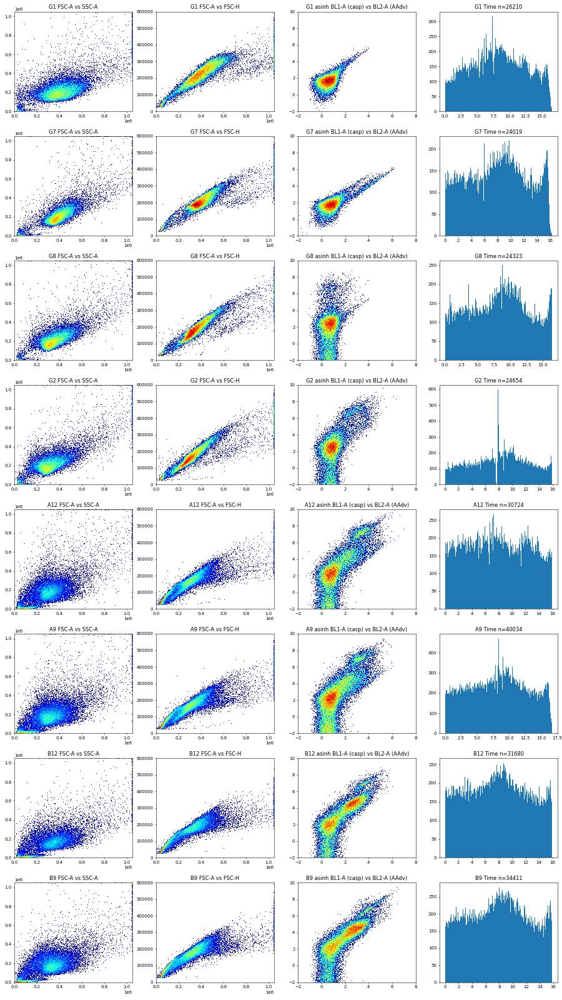
19
thinking
Control wells show BL1 is CellEvent caspase-3/7 (mislabelled "AAV-GFP"), BL2 is SYTOX AADvanced, and the spillover matrix is the identity. Next I'll set the cells/singlets gates and check how much caspase signal bleeds into BL2.
20
tool call · Bash
cd /task; cat > work/plot2.py <<'EOF'
import pickle, numpy as np, matplotlib; matplotlib.use('Agg'); import matplotlib.pyplot as plt
from matplotlib.colors import LogNorm
data = pickle.load(open('/task/work/raw.pkl','rb'))
def fn(w): return f'Caspase-assay-2-mlk_caspase_Group_{w}.fcs'
def asinh(x, c=150): return np.arcsinh(x/c)
# pool a few wells for FSC/SSC density
pool = np.vstack([data[fn(w)][['FSC-A','SSC-A','FSC-H','BL1-A','BL2-A']].values for w in ['A12','B12','C12','A1','B1','C1','G2']])
fig, ax = plt.subplots(1,3, figsize=(21,7))
ax[0].hist2d(pool[:,0], pool[:,1], bins=300, range=[[0,1.05e6],[0,1.05e6]], cmap='jet', cmin=1, norm=LogNorm()); ax[0].grid(True); ax[0].set_xticks(np.arange(0,1.05e6,1e5)); ax[0].set_yticks(np.arange(0,1.05e6,1e5))
ax[1].hist2d(pool[:,0], pool[:,2], bins=300, range=[[0,1.05e6],[0,6e5]], cmap='jet', cmin=1, norm=LogNorm()); ax[1].grid(True); ax[1].set_xticks(np.arange(0,1.05e6,1e5))
r = pool[:,2]/np.maximum(pool[:,0],1)
ax[2].hist2d(pool[:,0], r, bins=300, range=[[0,1.05e6],[0,1.2]], cmap='jet', cmin=1, norm=LogNorm()); ax[2].grid(True); ax[2].set_title('FSC-H/FSC-A ratio')
for a in ax: a.tick_params(labelrotation=45)
plt.tight_layout(); plt.savefig('/task/work/scatter_pool.png', dpi=55)
for w in ['G1','A12','C1']:
d=data[fn(w)]
print(w, 'FSC-A sat', (d['FSC-A']>=1048575).mean().round(4), 'SSC-A sat', (d['SSC-A']>=1048575).mean().round(4), 'BL2 sat',(d['BL2-A']>=1048575).mean().round(4), 'BL1 sat',(d['BL1-A']>=1048575).mean().round(4))
EOF
python3 -I work/plot2.py21
tool output
G1 FSC-A sat 0.0172 SSC-A sat 0.0106 BL2 sat 0.0 BL1 sat 0.0 A12 FSC-A sat 0.0097 SSC-A sat 0.009 BL2 sat 0.0002 BL1 sat 0.0 C1 FSC-A sat 0.0299 SSC-A sat 0.0363 BL2 sat 0.0001 BL1 sat 0.0
22
tool call · Read
{
"file_path": "/task/work/scatter_pool.png"
}23
tool output
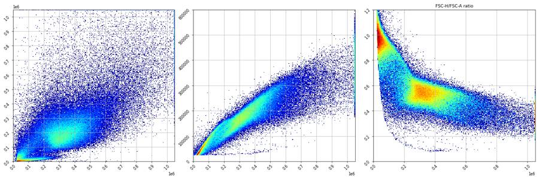
25
tool call · Bash
cd /task; cat > work/plot3.py <<'EOF'
import pickle, numpy as np, matplotlib; matplotlib.use('Agg'); import matplotlib.pyplot as plt
from matplotlib.colors import LogNorm
data = pickle.load(open('/task/work/raw.pkl','rb'))
def fn(w): return f'Caspase-assay-2-mlk_caspase_Group_{w}.fcs'
def asinh(x, c=150): return np.arcsinh(x/c)
wells=['B9','C9','A9','G1']
fig, ax = plt.subplots(len(wells),3, figsize=(21,7*len(wells)))
for i,w in enumerate(wells):
d=data[fn(w)]
b1=asinh(d['BL1-A']); b2=asinh(d['BL2-A'])
neg=(b1<2)&(b2<4); cas=(b1>=2.5)&(b2<5.5); dp=(b1>=2.5)&(b2>=5.5); dead=(b1<2)&(b2>=4.5)
for m,c,l in [(neg,'grey','neg'),(dead,'red','BL2+ BL1-'),(cas,'green','BL1+ BL2 mid'),(dp,'blue','BL1+BL2hi')]:
ax[i,0].scatter(d['FSC-A'][m], d['SSC-A'][m], s=1, c=c, alpha=0.3, label=f'{l} {m.sum()}')
ax[i,1].scatter(d['FSC-A'][m], d['FSC-H'][m], s=1, c=c, alpha=0.3)
ax[i,0].legend(markerscale=10); ax[i,0].set_title(w); ax[i,0].grid(True); ax[i,1].grid(True)
ax[i,0].set_xlim(0,1.05e6); ax[i,0].set_ylim(0,1.05e6); ax[i,1].set_xlim(0,1.05e6); ax[i,1].set_ylim(0,6e5)
ax[i,2].hist2d(b1,b2,bins=200, range=[[-2,8],[-2,10]], cmap='jet', cmin=1, norm=LogNorm()); ax[i,2].grid(True)
plt.tight_layout(); plt.savefig('/task/work/pops_scatter.png', dpi=45)
EOF
python3 -I work/plot3.py26
tool output
(Bash completed with no output)
27
tool call · Read
{
"file_path": "/task/work/pops_scatter.png"
}28
tool output
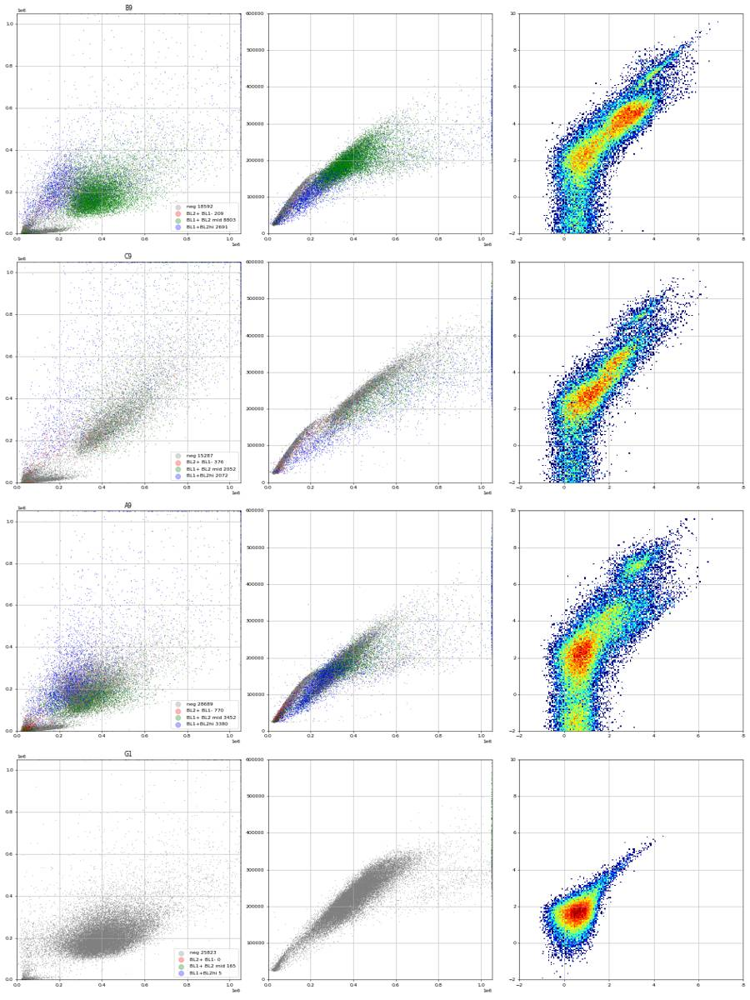
30
tool call · Bash
cd /task; cat > work/spill.py <<'EOF'
import pickle, numpy as np
data = pickle.load(open('/task/work/raw.pkl','rb'))
def fn(w): return f'Caspase-assay-2-mlk_caspase_Group_{w}.fcs'
for w in ['G1','G7','G8','G2','B9','A12']:
d=data[fn(w)]
cells=(d['FSC-A']>150000)&(d['FSC-A']<1040000)&(d['SSC-A']<1040000)&(d['SSC-A']>40000)
d=d[cells]
b1=d['BL1-A'].values; b2=d['BL2-A'].values
neg = b1<600
print(w, 'n', len(d), 'BL1 med', np.median(b1), 'BL2 med', np.median(b2), 'BL1 p99', np.percentile(b1,99).round(), 'BL2 p99', np.percentile(b2,99).round())
for lo,hi in [(1000,3000),(3000,10000),(10000,30000),(30000,1e6)]:
m=(b1>=lo)&(b1<hi)
if m.sum()>5:
print(f' BL1 in [{lo},{hi}) n={m.sum()} median BL2/BL1={np.median(b2[m]/b1[m]):.2f} q25={np.percentile(b2[m]/b1[m],25):.2f} q75={np.percentile(b2[m]/b1[m],75):.2f} medBL2={np.median(b2[m]):.0f}')
EOF
python3 -I work/spill.py31
tool output
G1 n 24132 BL1 med 94.0 BL2 med 372.0 BL1 p99 403.0 BL2 p99 1944.0 BL1 in [1000,3000) n=19 median BL2/BL1=4.63 q25=4.09 q75=5.04 medBL2=5118 G7 n 22230 BL1 med 138.5 BL2 med 412.0 BL1 p99 8554.0 BL2 p99 7996.0 BL1 in [1000,3000) n=359 median BL2/BL1=1.11 q25=1.00 q75=1.32 medBL2=2116 BL1 in [3000,10000) n=409 median BL2/BL1=0.95 q25=0.91 q75=1.02 medBL2=5294 BL1 in [10000,30000) n=164 median BL2/BL1=0.93 q25=0.90 q75=0.95 medBL2=12166 G8 n 22749 BL1 med 111.0 BL2 med 550.0 BL1 p99 444.0 BL2 p99 66642.0 BL1 in [1000,3000) n=15 median BL2/BL1=4.61 q25=3.73 q75=15.58 medBL2=6515 G2 n 21918 BL1 med 157.0 BL2 med 722.0 BL1 p99 3668.0 BL2 p99 101994.0 BL1 in [1000,3000) n=791 median BL2/BL1=22.08 q25=6.10 q75=57.20 medBL2=47160 BL1 in [3000,10000) n=332 median BL2/BL1=9.05 q25=5.06 q75=20.42 medBL2=39388 BL1 in [10000,30000) n=6 median BL2/BL1=6.54 q25=4.72 q75=10.83 medBL2=95452 B9 n 21053 BL1 med 897.0 BL2 med 4171.0 BL1 p99 10301.0 BL2 p99 123679.0 BL1 in [1000,3000) n=7559 median BL2/BL1=4.31 q25=3.12 q75=6.51 medBL2=7308 BL1 in [3000,10000) n=1901 median BL2/BL1=4.69 q25=3.10 q75=14.29 medBL2=20915 BL1 in [10000,30000) n=220 median BL2/BL1=7.66 q25=3.25 q75=14.88 medBL2=106806 A12 n 18308 BL1 med 271.0 BL2 med 1694.0 BL1 p99 8113.0 BL2 p99 206530.0 BL1 in [1000,3000) n=3294 median BL2/BL1=11.99 q25=4.20 q75=44.35 medBL2=19264 BL1 in [3000,10000) n=1222 median BL2/BL1=17.02 q25=3.73 q75=35.92 medBL2=81026 BL1 in [10000,30000) n=105 median BL2/BL1=2.41 q25=1.78 q75=9.20 medBL2=32458 BL1 in [30000,1000000.0) n=6 median BL2/BL1=1.38 q25=1.22 q75=1.78 medBL2=65857
33
tool call · Bash
cd /task; cat > work/spill2.py <<'EOF'
import pickle, numpy as np
data = pickle.load(open('/task/work/raw.pkl','rb'))
def fn(w): return f'Caspase-assay-2-mlk_caspase_Group_{w}.fcs'
neg = data[fn('G1')]; cells=lambda d: d[(d['FSC-A']>150000)&(d['FSC-A']<1040000)&(d['SSC-A']<1040000)&(d['SSC-A']>40000)]
neg=cells(neg)
print('G1 BL1 median', neg['BL1-A'].median(), 'BL2 median', neg['BL2-A'].median())
g8=cells(data[fn('G8')])
for lo,hi in [(5000,20000),(20000,60000),(60000,200000),(200000,2e6)]:
m=(g8['BL2-A']>=lo)&(g8['BL2-A']<hi)
print('G8 BL2 in',lo,hi,'n',m.sum(),'median BL1',g8['BL1-A'][m].median(), 'slope', ((g8['BL1-A'][m]-neg['BL1-A'].median())/(g8['BL2-A'][m]-neg['BL2-A'].median())).median().round(4))
g7=cells(data[fn('G7')])
m=g7['BL1-A']>3000
x=g7['BL1-A'][m]-neg['BL1-A'].median(); y=g7['BL2-A'][m]-neg['BL2-A'].median()
print('G7 slope BL1->BL2 median', (y/x).median().round(4), 'regression through origin', (x*y).sum()/(x*x).sum())
# fraction BL1>1000 in each control
for w in ['G1','G7','G8','G2','G3','G4','G5','G6']:
d=cells(data[fn(w)])
print(w, 'frac BL1>1000', round((d['BL1-A']>1000).mean()*100,2), 'frac BL2>20000', round((d['BL2-A']>20000).mean()*100,2), 'n', len(d))
EOF
python3 -I work/spill2.py; python3 -I -c "import flowkit as fk, inspect; print(inspect.signature(fk.Matrix.__init__)); print(inspect.signature(fk.transforms.LogicleTransform.__init__)); print(inspect.signature(fk.Dimension.__init__)); print(inspect.signature(fk.gates.PolygonGate.__init__)); print(inspect.signature(fk.gates.RectangleGate.__init__)); print(inspect.signature(fk.GatingStrategy.add_gate)); print(inspect.signature(fk.GatingStrategy.add_comp_matrix))"34
tool output
G1 BL1 median 94.0 BL2 median 372.0 G8 BL2 in 5000 20000 n 552 median BL1 150.0 slope 0.0064 G8 BL2 in 20000 60000 n 351 median BL1 134.0 slope 0.0011 G8 BL2 in 60000 200000 n 249 median BL1 143.0 slope 0.0005 G8 BL2 in 200000 2000000.0 n 21 median BL1 182.0 slope 0.0003 G7 slope BL1->BL2 median 0.9078 regression through origin 0.9162054661767529 G1 frac BL1>1000 0.07 frac BL2>20000 0.0 n 24132 G7 frac BL1>1000 4.22 frac BL2>20000 0.09 n 22230 G8 frac BL1>1000 0.07 frac BL2>20000 2.73 n 22749 G2 frac BL1>1000 5.16 frac BL2>20000 5.69 n 21918 G3 frac BL1>1000 7.88 frac BL2>20000 6.64 n 30636 G4 frac BL1>1000 8.78 frac BL2>20000 6.96 n 29175 G5 frac BL1>1000 6.69 frac BL2>20000 4.84 n 11970 G6 frac BL1>1000 7.3 frac BL2>20000 7.34 n 12747 (self, spill_data_or_file, detectors, fluorochromes=None, null_channels=None) (self, param_t, param_w, param_m, param_a) (self, dimension_id, compensation_ref='uncompensated', transformation_ref=None, range_min=None, range_max=None) (self, gate_name, dimensions, vertices, use_complement=False) (self, gate_name, dimensions, use_complement=False) (self, gate, gate_path, sample_id=None) (self, matrix_id, matrix)
36
thinking
Caspase dye spills about 0.91 of its BL1 signal into BL2 (BL2→BL1 is ~0.001), and G1, G7 and G8 match their labels. I'm drawing threshold histograms on the compensated data to place the live/dead and caspase+ gates next.
37
tool call · Bash
cd /task; cat > work/plot4.py <<'EOF'
import pickle, numpy as np, matplotlib; matplotlib.use('Agg'); import matplotlib.pyplot as plt
from matplotlib.colors import LogNorm
data = pickle.load(open('/task/work/raw.pkl','rb'))
def fn(w): return f'Caspase-assay-2-mlk_caspase_Group_{w}.fcs'
def asinh(x, c=150): return np.arcsinh(x/c)
def cells(d): return d[(d['FSC-A']>150000)&(d['FSC-A']<1040000)&(d['SSC-A']<1040000)&(d['SSC-A']>40000)]
S=0.91
wells=['G1','G7','G8','G2','A12','A9','B12','B9','C12','C9']
fig, ax = plt.subplots(len(wells),3, figsize=(20,4.5*len(wells)))
for i,w in enumerate(wells):
d=cells(data[fn(w)])
b1=d['BL1-A'].values - 0.001*d['BL2-A'].values; b2=d['BL2-A'].values - S*d['BL1-A'].values
ax[i,0].hist2d(asinh(b1),asinh(b2),bins=200, range=[[-3,8],[-3,10]], cmap='jet', cmin=1, norm=LogNorm()); ax[i,0].grid(True); ax[i,0].set_title(w+' comp asinh BL1 vs BL2')
ax[i,0].set_xticks(np.arange(-3,8.1,0.5)); ax[i,0].tick_params(labelsize=7)
ax[i,1].hist(asinh(b2), bins=300, range=(-3,10), histtype='step'); ax[i,1].set_yscale('log'); ax[i,1].grid(True); ax[i,1].set_title('BL2 comp'); ax[i,1].set_xticks(np.arange(-3,10.1,0.5)); ax[i,1].tick_params(labelsize=7)
ax[i,2].hist(asinh(b1), bins=300, range=(-3,8), histtype='step'); ax[i,2].set_yscale('log'); ax[i,2].grid(True); ax[i,2].set_title('BL1 comp'); ax[i,2].set_xticks(np.arange(-3,8.1,0.5)); ax[i,2].tick_params(labelsize=7)
plt.tight_layout(); plt.savefig('/task/work/comp_hists.png', dpi=45)
EOF
python3 -I work/plot4.py38
tool output
(Bash completed with no output)
39
tool call · Read
{
"file_path": "/task/work/comp_hists.png"
}40
tool output
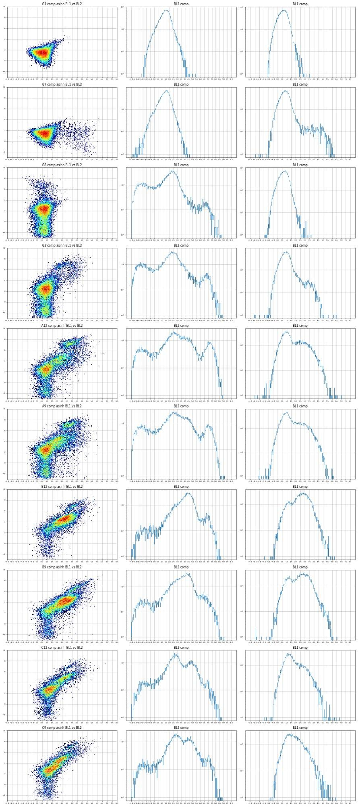
42
tool call · Bash
cd /task; cat > work/neg.py <<'EOF'
import pickle, numpy as np, pandas as pd
data = pickle.load(open('/task/work/raw.pkl','rb'))
def fn(w): return f'Caspase-assay-2-mlk_caspase_Group_{w}.fcs'
pd.set_option('display.width',250)
for w in ['G1','G7','G8','G2','A12','B12']:
d=data[fn(w)]
c=d[(d['FSC-A']>150000)&(d['FSC-A']<1040000)&(d['SSC-A']<1040000)&(d['SSC-A']>40000)]
lo=c['BL2-A']<0
print(w, 'frac BL2-A<0 among cells', round(lo.mean()*100,2), 'n', lo.sum())
print(c[lo].describe().loc[['50%']].round(0).to_string())
print(c[~lo].describe().loc[['50%']].round(0).to_string())
EOF
python3 -I work/neg.py43
tool output
G1 frac BL2-A<0 among cells 0.85 n 206
Time FSC-A SSC-A BL1-A BL2-A FSC-H SSC-H BL1-H BL2-H FSC-W SSC-W BL1-W BL2-W
50% 7.0 362444.0 146177.0 58.0 -31.0 216023.0 92027.0 82.0 116.0 139.0 124.0 0.0 0.0
Time FSC-A SSC-A BL1-A BL2-A FSC-H SSC-H BL1-H BL2-H FSC-W SSC-W BL1-W BL2-W
50% 8.0 409340.0 204605.0 94.0 375.0 228470.0 120276.0 98.0 255.0 146.0 130.0 0.0 0.0
G7 frac BL2-A<0 among cells 0.67 n 150
Time FSC-A SSC-A BL1-A BL2-A FSC-H SSC-H BL1-H BL2-H FSC-W SSC-W BL1-W BL2-W
50% 7.0 348894.0 146370.0 66.0 -33.0 186253.0 91188.0 86.0 132.0 148.0 125.0 0.0 0.0
Time FSC-A SSC-A BL1-A BL2-A FSC-H SSC-H BL1-H BL2-H FSC-W SSC-W BL1-W BL2-W
50% 8.0 392252.0 201921.0 139.0 414.0 197768.0 116216.0 114.0 281.0 154.0 132.0 0.0 0.0
G8 frac BL2-A<0 among cells 20.48 n 4660
Time FSC-A SSC-A BL1-A BL2-A FSC-H SSC-H BL1-H BL2-H FSC-W SSC-W BL1-W BL2-W
50% 8.0 330477.0 188073.0 94.0 -277.0 172101.0 110008.0 96.0 514.0 140.0 129.0 0.0 0.0
Time FSC-A SSC-A BL1-A BL2-A FSC-H SSC-H BL1-H BL2-H FSC-W SSC-W BL1-W BL2-W
50% 9.0 355293.0 214213.0 116.0 749.0 184722.0 120781.0 104.0 734.0 142.0 131.0 0.0 0.0
G2 frac BL2-A<0 among cells 18.13 n 3973
Time FSC-A SSC-A BL1-A BL2-A FSC-H SSC-H BL1-H BL2-H FSC-W SSC-W BL1-W BL2-W
50% 8.0 300984.0 188885.0 120.0 -305.0 156672.0 112716.0 108.0 522.0 128.0 127.0 0.0 0.0
Time FSC-A SSC-A BL1-A BL2-A FSC-H SSC-H BL1-H BL2-H FSC-W SSC-W BL1-W BL2-W
50% 8.0 320307.0 215338.0 167.0 950.0 167125.0 122873.0 127.0 819.0 129.0 130.0 0.0 0.0
A12 frac BL2-A<0 among cells 10.24 n 1874
Time FSC-A SSC-A BL1-A BL2-A FSC-H SSC-H BL1-H BL2-H FSC-W SSC-W BL1-W BL2-W
50% 7.0 307958.0 189178.0 121.0 -314.0 165264.0 114957.0 110.0 496.0 130.0 126.0 0.0 0.0
Time FSC-A SSC-A BL1-A BL2-A FSC-H SSC-H BL1-H BL2-H FSC-W SSC-W BL1-W BL2-W
50% 8.0 330286.0 195732.0 333.0 2223.0 173634.0 115423.0 204.0 1226.0 139.0 130.0 0.0 18.0
B12 frac BL2-A<0 among cells 2.12 n 329
Time FSC-A SSC-A BL1-A BL2-A FSC-H SSC-H BL1-H BL2-H FSC-W SSC-W BL1-W BL2-W
50% 8.0 348509.0 174438.0 153.0 -244.0 189603.0 105739.0 126.0 443.0 138.0 126.0 0.0 0.0
Time FSC-A SSC-A BL1-A BL2-A FSC-H SSC-H BL1-H BL2-H FSC-W SSC-W BL1-W BL2-W
50% 8.0 370174.0 182199.0 1008.0 5838.0 186793.0 109668.0 600.0 3288.0 149.0 130.0 0.0 55.045
tool call · Bash
cd /task; cat > work/quick.py <<'EOF'
import pickle, numpy as np, pandas as pd
data = pickle.load(open('/task/work/raw.pkl','rb'))
lay=pd.read_csv('/task/inputs/plate_layout.csv')
rows=[]
for _,r in lay.iterrows():
d=data[r.file]
c=d[(d['FSC-A']>150000)&(d['FSC-A']<1040000)&(d['SSC-A']<1040000)&(d['SSC-A']>40000)]
b1=c['BL1-A']-0.001*c['BL2-A']; b2=c['BL2-A']-0.91*c['BL1-A']
dead=b2>20000
live=~dead
rows.append(dict(well=r.well, line=r.cell_line, cpt=r.camptothecin, cm=r.conditioned_media.replace(' conditioned media','').replace('WT ',''), n=len(d), cells=len(c), pct_cells=round(100*len(c)/len(d),1),
dead=round(100*dead.mean(),1), casp_live=round(100*(b1[live]>1000).mean(),1), casp_all=round(100*(b1>1000).mean(),1), b1med_live=round(b1[live].median()), b2med_live=round(b2[live].median())))
df=pd.DataFrame(rows)
pd.set_option('display.width',250); pd.set_option('display.max_rows',200)
print(df.to_string())
df.to_csv('/task/work/quick.csv',index=False)
EOF
python3 -I work/quick.py46
tool output
well line cpt cm n cells pct_cells dead casp_live casp_all b1med_live b2med_live 0 A1 WT 10uM 24hr 31328 19362 61.8 12.1 13.9 21.4 192 794 1 A2 WT 5uM 24hr 40169 27825 69.3 9.2 19.2 24.4 195 786 2 A3 WT 2uM 24hr 47337 30665 64.8 9.6 19.7 24.4 198 772 3 A4 WT DMSO 24hr 33079 22518 68.1 13.1 22.1 30.7 248 906 4 A5 WT 10uM 48hr 34963 23906 68.4 11.2 18.6 25.7 208 811 5 A6 WT 5uM 48hr 33431 24174 72.3 9.4 18.5 24.4 201 1319 6 A7 WT 2uM 48hr 36445 26701 73.3 10.3 18.2 24.6 198 1232 7 A8 WT DMSO 48hr 22867 16261 71.1 13.6 17.3 26.8 207 1328 8 A9 WT 10uM no 40034 23563 58.9 11.2 13.6 22.0 214 896 9 A10 WT 5uM no 42298 27913 66.0 12.7 14.9 23.4 194 754 10 A11 WT 2uM no 43376 27815 64.1 13.2 16.4 25.4 193 731 11 A12 WT DMSO no 30724 18308 59.6 14.9 13.5 24.9 215 994 12 B1 E1 10uM 24hr 18757 13212 70.4 30.4 52.5 66.3 1050 3148 13 B2 E1 5uM 24hr 32477 22280 68.6 16.1 61.1 67.0 1320 3820 14 B3 E1 2uM 24hr 40067 26228 65.5 17.9 68.2 73.5 1576 4456 15 B4 E1 DMSO 24hr 19965 12484 62.5 26.4 54.2 65.9 1085 3558 16 B5 E1 10uM 48hr 17852 13126 73.5 25.0 56.1 66.7 1143 3895 17 B6 E1 5uM 48hr 31705 21858 68.9 18.0 61.7 68.3 1350 4355 18 B7 E1 2uM 48hr 35417 23312 65.8 21.0 65.8 72.6 1509 4969 19 B8 E1 DMSO 48hr 26222 16131 61.5 17.6 64.9 71.0 1449 5022 20 B9 E1 10uM no 34411 21053 61.2 7.9 41.1 45.7 792 2705 21 B10 E1 5uM no 40098 24589 61.3 4.9 42.9 45.7 843 3019 22 B11 E1 2uM no 41005 23349 56.9 7.9 51.1 54.9 1021 3536 23 B12 E1 DMSO no 31680 15488 48.9 8.4 44.5 49.0 887 4183 24 C1 E3 10uM 24hr 17681 9895 56.0 22.6 39.9 53.2 774 5484 25 C2 E3 5uM 24hr 25455 12333 48.5 21.2 46.5 57.6 900 5047 26 C3 E3 2uM 24hr 21098 12140 57.5 20.2 35.1 47.8 612 4385 27 C4 E3 DMSO 24hr 18113 9157 50.6 22.6 44.9 57.2 881 5564 28 C5 E3 10uM 48hr 18729 9058 48.4 21.9 39.1 52.3 717 4969 29 C6 E3 5uM 48hr 21716 10725 49.4 21.8 39.9 52.7 752 5487 30 C7 E3 2uM 48hr 22874 11628 50.8 18.5 33.4 45.4 580 3681 31 C8 E3 DMSO 48hr 18604 9344 50.2 22.2 35.1 49.0 646 4717 32 C9 E3 10uM no 22962 13239 57.7 8.6 11.8 18.7 349 1613 33 C10 E3 5uM no 15794 9956 63.0 6.5 8.6 14.1 290 1190 34 C11 E3 2uM no 19854 12906 65.0 5.8 9.1 13.5 272 1083 35 C12 E3 DMSO no 23104 13287 57.5 7.0 15.5 20.7 300 1302 36 D1 WT 10uM 24hr 29965 19116 63.8 11.9 29.4 37.6 249 1070 37 D2 WT 5uM 24hr 42557 28261 66.4 9.7 24.1 31.1 221 895 38 D3 WT 2uM 24hr 44711 29312 65.6 10.8 27.8 35.1 237 981 39 D4 WT DMSO 24hr 26104 17051 65.3 17.7 30.3 42.3 267 1231 40 D5 WT 10uM 48hr 28348 18447 65.1 14.0 22.1 32.6 219 1027 41 D6 WT 5uM 48hr 32268 21554 66.8 10.2 22.8 30.3 222 943 42 D7 WT 2uM 48hr 38003 25666 67.5 12.5 21.1 30.2 222 1024 43 D8 WT DMSO 48hr 27787 16607 59.8 22.2 26.9 42.8 256 1220 44 D9 WT 10uM no 35585 20232 56.9 13.1 21.0 31.0 253 1339 45 D10 WT 5uM no 38425 25021 65.1 12.7 17.6 27.6 215 828 46 D11 WT 2uM no 43319 27653 63.8 13.1 18.4 28.7 211 841 47 D12 WT DMSO no 28999 22428 77.3 11.0 6.5 15.0 163 517 48 E1 E1 10uM 24hr 18885 12619 66.8 21.0 64.5 71.8 1433 5347 49 E2 E1 5uM 24hr 35801 23521 65.7 19.5 73.1 78.3 2181 6906 50 E3 E1 2uM 24hr 39231 25192 64.2 22.0 74.6 80.1 2275 7171 51 E4 E1 DMSO 24hr 18739 12650 67.5 34.7 72.9 82.3 1742 5914 52 E5 E1 10uM 48hr 18850 12762 67.7 35.4 67.3 78.8 1631 5833 53 E6 E1 5uM 48hr 32342 21158 65.4 23.9 70.6 77.6 2003 6549 54 … [2,828 more characters not shown]
48
thinking
Early numbers show a clear pattern, but I'm tightening the scatter gates before drawing conclusions. Camptothecin had no dose effect and F8 looks off against its replicates, so next I'm refining the gates.
49
tool call · Bash
cd /task; cat > work/plot5.py <<'EOF'
import pickle, numpy as np, matplotlib; matplotlib.use('Agg'); import matplotlib.pyplot as plt
from matplotlib.colors import LogNorm
data = pickle.load(open('/task/work/raw.pkl','rb'))
def fn(w): return f'Caspase-assay-2-mlk_caspase_Group_{w}.fcs'
wells=['A12','B12','C12','F4','F8','G1','E4','D12']
fig, ax = plt.subplots(2,4, figsize=(28,14)); ax=ax.ravel()
for i,w in enumerate(wells):
d=data[fn(w)]
ax[i].hist2d(d['FSC-A'], d['SSC-A'], bins=250, range=[[0,1.05e6],[0,1.05e6]], cmap='jet', cmin=1, norm=LogNorm())
ax[i].set_xticks(np.arange(0,1.05e6,5e4)); ax[i].set_yticks(np.arange(0,1.05e6,5e4)); ax[i].grid(True, alpha=0.5); ax[i].tick_params(labelsize=6, labelrotation=90); ax[i].set_title(w)
ax[i].set_xlim(0,6e5); ax[i].set_ylim(0,6e5)
plt.tight_layout(); plt.savefig('/task/work/fsc_ssc_zoom.png', dpi=40)
EOF
python3 -I work/plot5.py50
tool output
(Bash completed with no output)
51
tool call · Read
{
"file_path": "/task/work/fsc_ssc_zoom.png"
}52
tool output
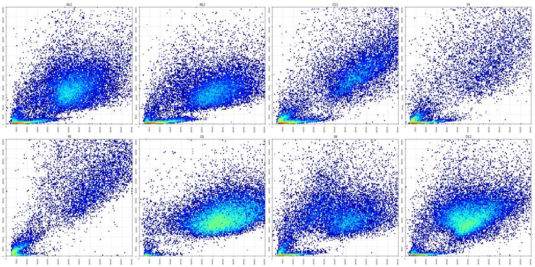
54
tool call · Bash
cd /task; cat > work/plot6.py <<'EOF'
import pickle, numpy as np, matplotlib; matplotlib.use('Agg'); import matplotlib.pyplot as plt
from matplotlib.colors import LogNorm
data = pickle.load(open('/task/work/raw.pkl','rb'))
def fn(w): return f'Caspase-assay-2-mlk_caspase_Group_{w}.fcs'
pool = lambda ws: np.vstack([data[fn(w)][['FSC-A','SSC-A','FSC-H','BL1-A','BL2-A']].values for w in ws])
groups={'WT':['A4','A12','D4','D12','A1','D1'],'E1':['B4','B12','E4','E12','B1','E1'],'E3':['C4','C12','F4','F12','C1','F1']}
fig, ax = plt.subplots(1,3, figsize=(24,8))
for i,(g,ws) in enumerate(groups.items()):
p=pool(ws)
ax[i].hist2d(p[:,0], p[:,1], bins=200, range=[[0,1.05e6],[0,1.05e6]], cmap='jet', cmin=1, norm=LogNorm())
ax[i].set_xticks(np.arange(0,1.05e6,1e5)); ax[i].set_yticks(np.arange(0,1.05e6,1e5)); ax[i].grid(True, alpha=0.6); ax[i].set_title(g)
ax[i].ticklabel_format(style='sci', scilimits=(5,5))
plt.tight_layout(); plt.savefig('/task/work/fsc_ssc_lines.png', dpi=50)
EOF
python3 -I work/plot6.py55
tool output
(Bash completed with no output)
56
tool call · Read
{
"file_path": "/task/work/fsc_ssc_lines.png"
}57
tool output
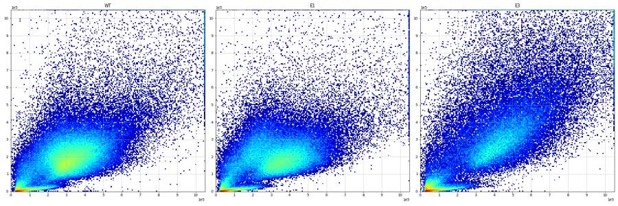
59
tool call · Bash
cd /task; cat > work/plot7.py <<'EOF'
import pickle, numpy as np, matplotlib; matplotlib.use('Agg'); import matplotlib.pyplot as plt
from matplotlib.colors import LogNorm
data = pickle.load(open('/task/work/raw.pkl','rb'))
def fn(w): return f'Caspase-assay-2-mlk_caspase_Group_{w}.fcs'
def cells(d): return d[(d['FSC-A']>100000)&(d['FSC-A']<1040000)&(d['SSC-A']<1040000)&(d['SSC-A']>40000)]
pool = lambda ws: np.vstack([cells(data[fn(w)])[['FSC-A','SSC-A','FSC-H','BL1-A','BL2-A']].values for w in ws])
groups={'WT':['A4','A12','D4','D12','A1','D1'],'E1':['B4','B12','E4','E12','B1','E1'],'E3':['C4','C12','F4','F12','C1','F1']}
fig, ax = plt.subplots(2,3, figsize=(24,14))
for i,(g,ws) in enumerate(groups.items()):
p=pool(ws)
ax[0,i].hist2d(p[:,0], p[:,2], bins=200, range=[[0,1.05e6],[0,6e5]], cmap='jet', cmin=1, norm=LogNorm())
ax[0,i].set_xticks(np.arange(0,1.05e6,1e5)); ax[0,i].set_yticks(np.arange(0,6e5,0.5e5)); ax[0,i].grid(True, alpha=0.6); ax[0,i].set_title(g)
ax[0,i].ticklabel_format(style='sci', scilimits=(5,5))
ax[1,i].hist2d(p[:,0], p[:,2]/p[:,0], bins=200, range=[[0,1.05e6],[0,1]], cmap='jet', cmin=1, norm=LogNorm())
ax[1,i].set_xticks(np.arange(0,1.05e6,1e5)); ax[1,i].set_yticks(np.arange(0,1,0.05)); ax[1,i].grid(True, alpha=0.6)
ax[1,i].ticklabel_format(axis='x',style='sci', scilimits=(5,5))
plt.tight_layout(); plt.savefig('/task/work/singlets_lines.png', dpi=50)
EOF
python3 -I work/plot7.py60
tool output
(Bash completed with no output)
61
tool call · Read
{
"file_path": "/task/work/singlets_lines.png"
}62
tool output
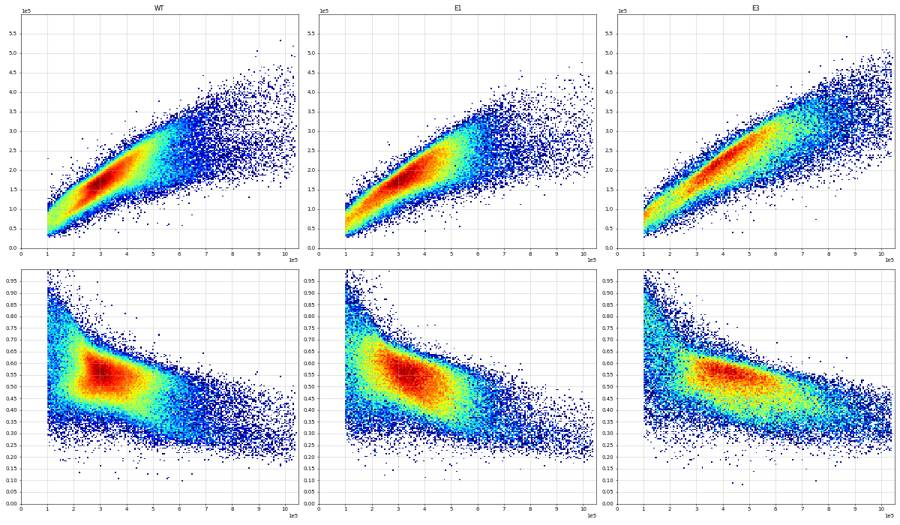
64
thinking
Scatter gates are set for cells and singlets, with saturated events dropped. Next I'm placing the BL2 dead and BL1 caspase+ thresholds on compensated data.
65
tool call · Bash
cd /task; cat > work/plot8.py <<'EOF'
import pickle, numpy as np, matplotlib; matplotlib.use('Agg'); import matplotlib.pyplot as plt
from matplotlib.colors import LogNorm
from matplotlib.path import Path
data = pickle.load(open('/task/work/raw.pkl','rb'))
def fn(w): return f'Caspase-assay-2-mlk_caspase_Group_{w}.fcs'
CELLS=[(1.0e5,4.0e4),(1.04e6,4.0e4),(1.04e6,1.04e6),(1.0e5,1.04e6)]
SING=[(1.0e5,0.40e5),(3.0e5,1.26e5),(5.0e5,2.1e5),(7.0e5,2.8e5),(1.04e6,3.9e5),(1.04e6,7.0e5),(1.0e5,1.1e5)]
def sing(d):
m=Path(CELLS).contains_points(d[['FSC-A','SSC-A']].values); d=d[m]
m=Path(SING).contains_points(d[['FSC-A','FSC-H']].values); return d[m]
def asinh(x, c=150): return np.arcsinh(x/c)
def comp(d): return d['BL1-A'].values-0.001*d['BL2-A'].values, d['BL2-A'].values-0.91*d['BL1-A'].values
wells=[('G1','G7','G8'),('G2','A12','D12'),('G5','B12','E12'),('G3','C12','F12'),('A4','B4','C4'),('F8','F4','C8')]
fig, ax = plt.subplots(len(wells),4, figsize=(28,6*len(wells)))
cols=['k','tab:blue','tab:red']
for i,ws in enumerate(wells):
for j,w in enumerate(ws):
d=sing(data[fn(w)]); b1,b2=comp(d)
ax[i,j].hist2d(asinh(b1),asinh(b2),bins=200, range=[[-3,8],[-3,10]], cmap='jet', cmin=1, norm=LogNorm()); ax[i,j].grid(True); ax[i,j].set_title(f'{w} n={len(d)}')
ax[i,j].set_xticks(np.arange(-3,8.1,0.5)); ax[i,j].set_yticks(np.arange(-3,10.1,0.5)); ax[i,j].tick_params(labelsize=8)
ax[i,j].axvline(asinh(1000),c='w'); ax[i,j].axhline(asinh(25000),c='w')
live=b2<25000
ax[i,3].hist(asinh(b1[live]), bins=220, range=(-3,8), histtype='step', density=True, color=cols[j], label=w)
ax[i,3].legend(); ax[i,3].set_xticks(np.arange(-3,8.1,0.5)); ax[i,3].grid(True); ax[i,3].set_title('BL1 comp within BL2<25000')
plt.tight_layout(); plt.savefig('/task/work/fluor_detail.png', dpi=38)
EOF
python3 -I work/plot8.py66
tool output
(Bash completed with no output)
67
tool call · Read
{
"file_path": "/task/work/fluor_detail.png"
}68
tool output
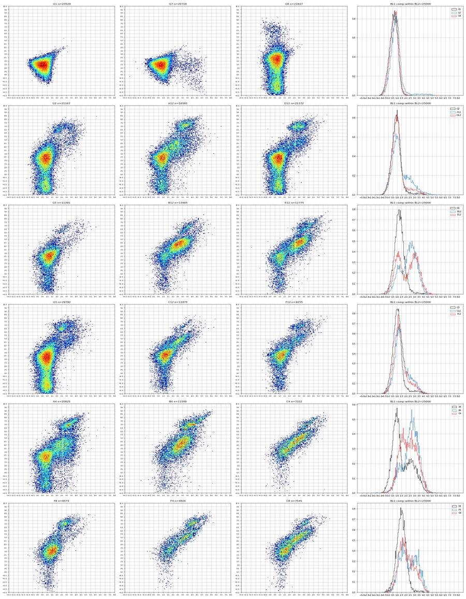
70
tool call · Bash
cd /task; cat > work/thr.py <<'EOF'
import pickle, numpy as np, pandas as pd
from matplotlib.path import Path
data = pickle.load(open('/task/work/raw.pkl','rb'))
lay=pd.read_csv('/task/inputs/plate_layout.csv')
def fn(w): return f'Caspase-assay-2-mlk_caspase_Group_{w}.fcs'
CELLS=[(1.0e5,4.0e4),(1.04e6,4.0e4),(1.04e6,1.04e6),(1.0e5,1.04e6)]
SING=[(1.0e5,0.40e5),(3.0e5,1.26e5),(5.0e5,2.1e5),(7.0e5,2.8e5),(1.04e6,3.9e5),(1.04e6,7.0e5),(1.0e5,1.1e5)]
def sing(d):
m=Path(CELLS).contains_points(d[['FSC-A','SSC-A']].values); d=d[m]
m=Path(SING).contains_points(d[['FSC-A','FSC-H']].values); return d[m]
def comp(d): return d['BL1-A'].values-0.001*d['BL2-A'].values, d['BL2-A'].values-0.91*d['BL1-A'].values
for w in ['G1','G8','G7']:
b1,b2=comp(sing(data[fn(w)]))
print(w, 'BL1 comp pct 99, 99.5, 99.9:', np.percentile(b1,[99,99.5,99.9]).round(), ' BL2 comp pct 99 99.5 99.9', np.percentile(b2,[99,99.5,99.9]).round())
# pooled valley search in all stained A-F wells, live
allb1=[]; allb2=[]
for f in lay.file[:72]:
b1,b2=comp(sing(data[f])); allb1.append(b1[b2<25000]); allb2.append(b2)
b1=np.concatenate(allb1); b2=np.concatenate(allb2)
h,e=np.histogram(np.arcsinh(b1/150), bins=np.arange(0,4,0.1))
for x,y in zip(e[:-1],h): print(f'{x:.1f} {150*np.sinh(x):7.0f} {y}')
print('BL2')
h,e=np.histogram(np.arcsinh(b2/150), bins=np.arange(3,9,0.1))
for x,y in zip(e[:-1],h): print(f'{x:.1f} {150*np.sinh(x):8.0f} {y}')
EOF
python3 -I work/thr.py71
tool output
G1 BL1 comp pct 99, 99.5, 99.9: [356. 428. 775.] BL2 comp pct 99 99.5 99.9 [1338. 1698. 3022.] G8 BL1 comp pct 99, 99.5, 99.9: [404. 503. 804.] BL2 comp pct 99 99.5 99.9 [ 58779. 82077. 151921.] G7 BL1 comp pct 99, 99.5, 99.9: [ 5385. 7903. 11743.] BL2 comp pct 99 99.5 99.9 [1270. 1605. 2728.] 0.0 0 7712 0.1 15 10376 0.2 30 13248 0.3 46 17284 0.4 62 21222 0.5 78 26059 0.6 95 30775 0.7 114 36115 0.8 133 39953 0.9 154 43183 1.0 176 44077 1.1 200 42706 1.2 226 39280 1.3 255 34589 1.4 286 29592 1.5 319 24970 1.6 356 21564 1.7 397 19185 1.8 441 17995 1.9 490 17427 2.0 544 17288 2.1 603 17645 2.2 669 18164 2.3 741 18983 2.4 820 19847 2.5 908 20535 2.6 1004 21506 2.7 1111 22375 2.8 1229 23010 2.9 1359 23380 3.0 1503 24010 3.1 1661 23955 3.2 1837 23731 3.3 2031 22803 3.4 2245 21411 3.5 2481 20116 3.6 2743 18476 3.7 3032 16540 3.8 3351 14258 BL2 3.0 1503 21681 3.1 1661 20766 3.2 1837 19643 3.3 2031 19207 3.4 2245 18776 3.5 2481 18694 3.6 2743 18717 3.7 3032 19191 3.8 3351 19630 3.9 3704 20594 4.0 4093 21316 4.1 4524 22433 4.2 5000 22870 4.3 5526 23686 4.4 6108 24423 4.5 6750 24460 4.6 7461 24107 4.7 8245 23800 4.8 9113 22822 4.9 10071 21174 5.0 11130 19399 5.1 12301 17309 5.2 13595 15303 5.3 15025 13175 5.4 16605 11232 5.5 18352 9398 5.6 20282 8149 5.7 22415 6936 5.8 24772 6210 5.9 27378 5970 6.0 30257 5896 6.1 33439 6045 6.2 36956 6653 6.3 40843 7017 6.4 45138 7398 6.5 49886 8137 6.6 55132 8745 6.7 60930 9461 6.8 67338 10112 6.9 74421 10280 7.0 82247 9538 7.1 90897 8510 7.2 100457 7525 7.3 111022 6475 7.4 122699 5338 7.5 135603 4142 7.6 149865 3182 7.7 165626 2382 7.8 183045 1763 7.9 202296 1224 8.0 223572 828 8.1 247085 551 8.2 273071 353 8.3 301790 232 8.4 333530 185 8.5 368608 117 8.6 407374 80 8.7 450218 50 8.8 497568 31
73
thinking
Caspase+ is set at BL1-A ≥ 600 and dead at BL2-A ≥ 30,000, both taken from the control valleys. I'm building the FlowKit strategy now and checking it against my manual counts.
74
tool call · Bash
cd /task; cat > work/build_gates.py <<'EOF'
import flowkit as fk, numpy as np, pandas as pd
CELLS=[(1.0e5,4.0e4),(1.04e6,4.0e4),(1.04e6,1.04e6),(1.0e5,1.04e6)]
SING=[(1.0e5,0.40e5),(3.0e5,1.26e5),(5.0e5,2.1e5),(7.0e5,2.8e5),(1.04e6,3.9e5),(1.04e6,7.0e5),(1.0e5,1.1e5)]
T_DEAD=30000.0; T_CASP=600.0
gs = fk.GatingStrategy()
# compensation from single-stain controls G7 (CellEvent only) and G8 (SYTOX AADvanced only), G1 unstained as negative
spill = np.array([[1.0, 0.91],[0.001, 1.0]])
mat = fk.Matrix(spill, ['BL1-A','BL2-A'], fluorochromes=['CellEvent_Casp37','SYTOX_AADvanced'])
gs.add_comp_matrix('comp_ctrl', mat)
fsc=fk.Dimension('FSC-A', compensation_ref='uncompensated')
ssc=fk.Dimension('SSC-A', compensation_ref='uncompensated')
fsch=fk.Dimension('FSC-H', compensation_ref='uncompensated')
cells=fk.gates.PolygonGate('cells',[fsc,ssc],CELLS)
gs.add_gate(cells, ('root',))
sing=fk.gates.PolygonGate('singlets',[fk.Dimension('FSC-A', compensation_ref='uncompensated'),fsch],SING)
gs.add_gate(sing, ('root','cells'))
live=fk.gates.RectangleGate('live',[fk.Dimension('BL2-A', compensation_ref='comp_ctrl', range_max=T_DEAD)])
gs.add_gate(live, ('root','cells','singlets'))
casp=fk.gates.RectangleGate('casp_pos',[fk.Dimension('BL1-A', compensation_ref='comp_ctrl', range_min=T_CASP)])
gs.add_gate(casp, ('root','cells','singlets','live'))
dead=fk.gates.RectangleGate('dead',[fk.Dimension('BL2-A', compensation_ref='comp_ctrl', range_min=T_DEAD)])
gs.add_gate(dead, ('root','cells','singlets'))
caspall=fk.gates.RectangleGate('casp_pos_all',[fk.Dimension('BL1-A', compensation_ref='comp_ctrl', range_min=T_CASP)])
gs.add_gate(caspall, ('root','cells','singlets'))
with open('/task/outputs/gates.xml','wb') as fh:
fk.export_gatingml(gs, fh)
gs2 = fk.parse_gating_xml('/task/outputs/gates.xml')
print(gs2.get_gate_hierarchy(output='ascii'))
EOF
python3 -I work/build_gates.py75
tool output
root
╰── cells
╰── singlets
├── live
│ ╰── casp_pos
├── dead
╰── casp_pos_all77
tool call · Bash
cd /task; cat > work/count.py <<'EOF'
import flowkit as fk, numpy as np, pandas as pd
lay=pd.read_csv('/task/inputs/plate_layout.csv')
gs = fk.parse_gating_xml('/task/outputs/gates.xml')
ROLE={'cells':'cells','singlets':'singlets','live':'live','casp_pos':'marker_positive','dead':'other','casp_pos_all':'other'}
ORDER=['cells','singlets','live','casp_pos','dead','casp_pos_all']
rows=[]
for _,r in lay.iterrows():
s=fk.Sample('/task/inputs/raw/'+r.file)
res=gs.gate_sample(s)
rep=res.report
n=s.event_count
rows.append(dict(file=r.file, well=r.well, population='all_events', role='other', parent='none', count=int(n), pct_of_parent=''))
counts={'all_events':n}
for _,q in rep.iterrows():
counts[q.gate_name]=int(q['count'])
par={}
for _,q in rep.iterrows():
par[q.gate_name]= q.gate_path[-1] if q.gate_path[-1]!='root' else 'all_events'
for p in ORDER:
c=counts[p]; pc=counts[par[p]]
rows.append(dict(file=r.file, well=r.well, population=p, role=ROLE[p], parent=par[p], count=c, pct_of_parent=round(100*c/pc,4) if pc>0 else ''))
df=pd.DataFrame(rows, columns=['file','well','population','role','parent','count','pct_of_parent'])
df.to_csv('/task/outputs/counts.csv', index=False)
print(df.head(14).to_string())
print(len(df))
EOF
python3 -I work/count.py78
tool output
file well population role parent count pct_of_parent 0 Caspase-assay-2-mlk_caspase_Group_A1.fcs A1 all_events other none 31328 1 Caspase-assay-2-mlk_caspase_Group_A1.fcs A1 cells cells all_events 20154 64.3322 2 Caspase-assay-2-mlk_caspase_Group_A1.fcs A1 singlets singlets cells 18159 90.1012 3 Caspase-assay-2-mlk_caspase_Group_A1.fcs A1 live live singlets 16225 89.3496 4 Caspase-assay-2-mlk_caspase_Group_A1.fcs A1 casp_pos marker_positive live 3316 20.4376 5 Caspase-assay-2-mlk_caspase_Group_A1.fcs A1 dead other singlets 1934 10.6504 6 Caspase-assay-2-mlk_caspase_Group_A1.fcs A1 casp_pos_all other singlets 5129 28.2449 7 Caspase-assay-2-mlk_caspase_Group_A2.fcs A2 all_events other none 40169 8 Caspase-assay-2-mlk_caspase_Group_A2.fcs A2 cells cells all_events 28274 70.3876 9 Caspase-assay-2-mlk_caspase_Group_A2.fcs A2 singlets singlets cells 25184 89.0712 10 Caspase-assay-2-mlk_caspase_Group_A2.fcs A2 live live singlets 23199 92.118 11 Caspase-assay-2-mlk_caspase_Group_A2.fcs A2 casp_pos marker_positive live 5378 23.182 12 Caspase-assay-2-mlk_caspase_Group_A2.fcs A2 dead other singlets 1985 7.882 13 Caspase-assay-2-mlk_caspase_Group_A2.fcs A2 casp_pos_all other singlets 7222 28.6769 560
80
tool call · Bash
cd /task; cat > work/verify.py <<'EOF'
import pickle, numpy as np, pandas as pd
from matplotlib.path import Path
data = pickle.load(open('/task/work/raw.pkl','rb'))
CELLS=[(1.0e5,4.0e4),(1.04e6,4.0e4),(1.04e6,1.04e6),(1.0e5,1.04e6)]
SING=[(1.0e5,0.40e5),(3.0e5,1.26e5),(5.0e5,2.1e5),(7.0e5,2.8e5),(1.04e6,3.9e5),(1.04e6,7.0e5),(1.0e5,1.1e5)]
S=np.array([[1,0.91],[0.001,1]]); Si=np.linalg.inv(S)
for w in ['A1','G7','G8']:
d=data[f'Caspase-assay-2-mlk_caspase_Group_{w}.fcs']
c=d[Path(CELLS).contains_points(d[['FSC-A','SSC-A']].values)]
s=c[Path(SING).contains_points(c[['FSC-A','FSC-H']].values)]
comp=s[['BL1-A','BL2-A']].values@Si
live=comp[:,1]<30000
print(w, len(c), len(s), live.sum(), (comp[live,0]>=600).sum(), (~live).sum(), (comp[:,0]>=600).sum())
EOF
python3 -I work/verify.py; grep -E "^Caspase-assay-2-mlk_caspase_Group_(G7|G8)\.fcs" outputs/counts.csv81
tool output
A1 20154 18159 16225 3316 1934 5129 G7 22360 20718 20718 906 0 906 G8 22966 21627 21189 58 438 59 Caspase-assay-2-mlk_caspase_Group_G7.fcs,G7,all_events,other,none,24019, Caspase-assay-2-mlk_caspase_Group_G7.fcs,G7,cells,cells,all_events,22360,93.093 Caspase-assay-2-mlk_caspase_Group_G7.fcs,G7,singlets,singlets,cells,20718,92.6565 Caspase-assay-2-mlk_caspase_Group_G7.fcs,G7,live,live,singlets,20718,100.0 Caspase-assay-2-mlk_caspase_Group_G7.fcs,G7,casp_pos,marker_positive,live,906,4.373 Caspase-assay-2-mlk_caspase_Group_G7.fcs,G7,dead,other,singlets,0,0.0 Caspase-assay-2-mlk_caspase_Group_G7.fcs,G7,casp_pos_all,other,singlets,906,4.373 Caspase-assay-2-mlk_caspase_Group_G8.fcs,G8,all_events,other,none,24323, Caspase-assay-2-mlk_caspase_Group_G8.fcs,G8,cells,cells,all_events,22966,94.4209 Caspase-assay-2-mlk_caspase_Group_G8.fcs,G8,singlets,singlets,cells,21627,94.1696 Caspase-assay-2-mlk_caspase_Group_G8.fcs,G8,live,live,singlets,21189,97.9748 Caspase-assay-2-mlk_caspase_Group_G8.fcs,G8,casp_pos,marker_positive,live,58,0.2737 Caspase-assay-2-mlk_caspase_Group_G8.fcs,G8,dead,other,singlets,438,2.0252 Caspase-assay-2-mlk_caspase_Group_G8.fcs,G8,casp_pos_all,other,singlets,59,0.2728
83
agent
Saved gates reproduce my manual counts exactly, so the compensation direction is correct. Next: per-well QC (event-rate stability, saturation, low counts) and replicate outlier checks.
84
tool call · Bash
cd /task; cat > work/qc.py <<'EOF'
import pickle, numpy as np, pandas as pd
data = pickle.load(open('/task/work/raw.pkl','rb'))
lay=pd.read_csv('/task/inputs/plate_layout.csv')
cnt=pd.read_csv('/task/outputs/counts.csv')
pv=cnt.pivot(index='well', columns='population', values='count')
rows=[]
for _,r in lay.iterrows():
d=data[r.file]; t=d['Time'].values
dur=t.max()-t.min()
bins=np.arange(0, np.ceil(t.max())+1, 1.0)
h,_=np.histogram(t,bins=bins); h=h[:-1] if len(h)>2 else h # drop last partial
rate_cv=h.std()/h.mean()
first=h[:len(h)//3].mean(); last=h[-len(h)//3:].mean()
gaps=np.diff(np.sort(t)).max()
# FSC median drift
n=len(t); o=np.argsort(t)
f1=np.median(d['FSC-A'].values[o[:n//3]]); f3=np.median(d['FSC-A'].values[o[-n//3:]])
sat=((d['FSC-A']>=1048575)|(d['SSC-A']>=1048575)|(d['BL1-A']>=1048575)|(d['BL2-A']>=1048575)).mean()*100
rows.append(dict(well=r.well, n=n, dur=round(dur,1), rate=round(n/dur), rate_cv=round(rate_cv,3), last_first=round(last/first,2), maxgap=round(gaps,3), fsc_drift=round(f3/f1,2), sat_pct=round(sat,2),
pct_cells=round(100*pv.loc[r.well,'cells']/n,1), live=pv.loc[r.well,'live'], casp=pv.loc[r.well,'casp_pos']))
df=pd.DataFrame(rows); pd.set_option('display.width',200); pd.set_option('display.max_rows',200)
print(df.to_string())
print(df.describe().round(3).to_string())
EOF
python3 -I work/qc.py85
tool output
well n dur rate rate_cv last_first maxgap fsc_drift sat_pct pct_cells live casp 0 A1 31328 16.0 1962 0.118 0.96 0.010 1.04 1.18 64.3 16225 3316 1 A2 40169 16.7 2407 0.133 1.01 0.006 1.02 0.95 70.4 23199 5378 2 A3 47337 16.8 2812 0.131 1.02 0.007 1.04 0.76 66.0 25425 6015 3 A4 33079 16.6 1991 0.151 1.07 0.012 1.06 1.43 70.3 18422 5722 4 A5 34963 16.7 2089 0.162 1.07 0.035 1.02 1.10 70.2 19924 4985 5 A6 33431 15.6 2137 0.147 1.11 0.006 0.99 1.47 74.0 20732 4857 6 A7 36445 16.8 2166 0.163 1.28 0.005 1.03 1.13 74.7 22625 5053 7 A8 22867 15.8 1446 0.172 1.16 0.009 0.98 1.98 73.6 13627 3363 8 A9 40034 16.7 2403 0.139 1.04 0.008 1.03 1.22 60.6 19271 4098 9 A10 42298 16.6 2543 0.150 1.05 0.013 1.01 1.20 67.4 22650 4327 10 A11 43376 16.6 2612 0.071 1.07 0.012 1.05 1.17 65.4 22456 4624 11 A12 30724 15.9 1927 0.078 0.96 0.017 1.10 1.29 62.0 14443 3197 12 B1 18757 16.7 1124 0.138 1.07 0.029 1.07 0.56 74.4 8896 6446 13 B2 32477 15.8 2054 0.171 1.13 0.005 1.07 0.42 70.4 17654 12641 14 B3 40067 16.7 2396 0.135 1.07 0.010 1.07 0.31 67.1 20205 15467 15 B4 19965 15.9 1258 0.207 1.08 0.022 1.10 1.23 67.1 8918 6412 16 B5 17852 16.8 1065 0.153 1.09 0.041 1.08 0.26 77.8 9801 7197 17 B6 31705 16.6 1905 0.142 0.98 0.038 1.03 0.41 71.1 17144 12488 18 B7 35417 15.9 2232 0.162 1.07 0.005 1.09 0.38 68.1 18010 13541 19 B8 26222 16.7 1570 0.098 1.01 0.022 1.08 0.59 64.5 12448 9410 20 B9 34411 15.8 2179 0.136 1.00 0.007 1.06 0.65 63.7 18154 10320 21 B10 40098 16.7 2403 0.137 1.04 0.029 1.04 0.68 63.6 21617 12463 22 B11 41005 16.8 2439 0.099 0.99 0.023 0.99 0.48 59.0 20202 13178 23 B12 31680 15.9 1989 0.115 0.96 0.005 0.99 0.77 50.7 12579 7813 24 C1 17681 16.5 1071 0.190 1.02 0.027 1.12 5.14 58.9 7343 4120 25 C2 25455 16.8 1518 0.166 1.16 0.009 1.23 4.16 50.2 9080 5234 26 C3 21098 15.9 1328 0.209 1.15 0.010 1.05 5.34 59.0 9444 4599 27 C4 18113 16.8 1078 0.188 1.23 0.010 1.46 4.62 53.4 6423 3567 28 C5 18729 16.8 1114 0.160 0.91 0.093 1.01 4.63 51.4 6495 3122 29 C6 21716 16.5 1320 0.164 0.94 0.046 1.01 4.33 51.5 8035 4234 30 C7 22874 16.6 1380 0.182 0.97 0.026 1.20 4.09 52.6 9346 4233 31 C8 18604 16.6 1122 0.152 1.00 0.064 1.07 4.17 53.2 6786 3097 32 C9 22962 15.8 1451 0.169 0.98 0.008 1.02 5.43 59.7 11155 2584 33 C10 15794 16.5 956 0.185 0.89 0.100 1.00 6.34 64.6 8688 1344 34 C11 19854 16.5 1206 0.215 0.85 0.061 1.01 7.54 66.3 11604 1671 35 C12 23104 16.7 1382 0.149 0.95 0.010 0.99 4.37 59.4 11503 2544 36 D1 29965 16.6 1804 0.179 0.91 0.073 1.02 1.11 65.6 16334 5700 37 D2 42557 16.8 2532 0.191 1.13 0.005 1.04 1.01 67.7 24200 6503 38 D3 44711 15.9 2807 0.159 1.07 0.005 1.04 0.78 66.5 24578 7319 39 D4 26104 16.8 1555 0.203 0.88 0.117 0.99 2.08 67.9 13441 4909 40 D5 28348 16.8 1692 0.182 1.01 0.014 1.03 1.37 67.1 15203 4026 41 D6 32268 16.5 1956 0.181 0.87 0.082 1.00 1.37 68.5 18270 4674 42 D7 38003 16.4 2323 0.275 0.82 0.138 1.01 0.84 69.0 21467 5199 43 D8 27787 16.8 1654 0.173 0.98 0.019 0.98 1.55 62.2 12529 3983 44 D9 35585 16.7 2129 0.203 0.84 0.388 0.98 1.69 58.7 16127 4567 45 D10 38425 16.1 2380 0.095 1.07 0.022 1.07 1.13 67.0 20749 4513 46 D11 43319 16.3 2654 0.208 0.85 0.064 1.02 0.90 65.7 22805 4894 47 D12 28999 16.8 1731 0.187 0.99 0.023 1.00 1.84 79.8 19179 1781 48 E1 18885 16.7 1130 0.180 1.14 0.029 1.09 0.61 69.6 9380 6825 49 E2 35801 16.5 2171 0.197 0.92 0.054 1.02 0.44 67.5 18412 14311 50 E3 39231 16.1 2440 0.265 0.85 0.058 1.02 0.40 65.9 19111 14986 51 E4 18739 15.9 1175 0.159 0.90 0.108 1.03 1.19 71.5 7880 6356 52 E5 18850 16.6 1137 0.170 1.01 0.032 1.03 0.83 71.6 8057 6049 53 E6 32342 16.7 1937 0.114 1.15 0.006 1.07 0.40 68.0 16182 12432 54 E7 38310 16.8 2280 0.137 1.15 0.005 1.06 0.36 63.8 19170 14912 55 E8 15706 15.9 990 0.118 0.95 0.026 1.07 1.50 66.3 6980 5460 56 E9 29597 15.9 1862 0.119 1.00 0.006 1.10 1.17 58.0 13105 8360 57 E10 41604 16.8 2482 0.073 1.07 0.004 1.09 0.73 60.4 20547 12297 58 E11 43387 16.7 2602 0.100 … [3,233 more characters not shown]
87
tool call · Bash
cd /task; cat > work/sat.py <<'EOF'
import pickle, numpy as np, pandas as pd
data = pickle.load(open('/task/work/raw.pkl','rb'))
lay=pd.read_csv('/task/inputs/plate_layout.csv')
M=1048575
for w in ['C1','C11','F8','F11','G5','G6','G3','A1','B1','D12','F4','C4']:
d=data[f'Caspase-assay-2-mlk_caspase_Group_{w}.fcs']
fa=(d['FSC-A']>=M); sa=(d['SSC-A']>=M); b2=(d['BL2-A']>=M); b1=(d['BL1-A']>=M); sh=d['SSC-H']>=M
s=fa|sa
print(w, 'FSC-A sat %.2f SSC-A sat %.2f both %.2f SSC-H sat %.2f BL1 %.3f BL2 %.3f'%(100*fa.mean(),100*sa.mean(),100*(fa&sa).mean(),100*sh.mean(),100*b1.mean(),100*b2.mean()),
' sat events median FSC-H %.0f SSC-H %.0f'%(d['FSC-H'][s].median(), d['SSC-H'][s].median()), ' FSC-W med sat %.0f vs all %.0f'%(d['FSC-W'][s].median(), d['FSC-W'].median()))
EOF
python3 -I work/sat.py88
tool output
C1 FSC-A sat 2.99 SSC-A sat 3.63 both 1.49 SSC-H sat 0.14 BL1 0.000 BL2 0.011 sat events median FSC-H 318972 SSC-H 477650 FSC-W med sat 209 vs all 133 C11 FSC-A sat 5.31 SSC-A sat 5.38 both 3.15 SSC-H sat 0.30 BL1 0.000 BL2 0.000 sat events median FSC-H 414572 SSC-H 515847 FSC-W med sat 203 vs all 139 F8 FSC-A sat 3.86 SSC-A sat 8.88 both 3.30 SSC-H sat 0.46 BL1 0.000 BL2 0.022 sat events median FSC-H 329192 SSC-H 599114 FSC-W med sat 188 vs all 137 F11 FSC-A sat 4.22 SSC-A sat 5.85 both 2.92 SSC-H sat 0.30 BL1 0.000 BL2 0.011 sat events median FSC-H 363368 SSC-H 537612 FSC-W med sat 202 vs all 129 G5 FSC-A sat 4.72 SSC-A sat 6.08 both 3.27 SSC-H sat 0.31 BL1 0.000 BL2 0.000 sat events median FSC-H 371641 SSC-H 528505 FSC-W med sat 203 vs all 147 G6 FSC-A sat 6.86 SSC-A sat 6.62 both 4.30 SSC-H sat 0.26 BL1 0.000 BL2 0.000 sat events median FSC-H 418757 SSC-H 501255 FSC-W med sat 210 vs all 144 G3 FSC-A sat 1.18 SSC-A sat 0.54 both 0.48 SSC-H sat 0.01 BL1 0.000 BL2 0.000 sat events median FSC-H 366143 SSC-H 272635 FSC-W med sat 297 vs all 128 A1 FSC-A sat 0.85 SSC-A sat 0.77 both 0.44 SSC-H sat 0.02 BL1 0.000 BL2 0.013 sat events median FSC-H 326172 SSC-H 382223 FSC-W med sat 258 vs all 124 B1 FSC-A sat 0.28 SSC-A sat 0.39 both 0.12 SSC-H sat 0.01 BL1 0.000 BL2 0.037 sat events median FSC-H 266181 SSC-H 355413 FSC-W med sat 236 vs all 132 D12 FSC-A sat 1.43 SSC-A sat 1.30 both 0.89 SSC-H sat 0.02 BL1 0.000 BL2 0.000 sat events median FSC-H 352552 SSC-H 345006 FSC-W med sat 288 vs all 125 F4 FSC-A sat 1.82 SSC-A sat 4.43 both 1.35 SSC-H sat 0.15 BL1 0.000 BL2 0.000 sat events median FSC-H 284433 SSC-H 548344 FSC-W med sat 199 vs all 121 C4 FSC-A sat 1.99 SSC-A sat 4.10 both 1.47 SSC-H sat 0.13 BL1 0.000 BL2 0.022 sat events median FSC-H 283685 SSC-H 532488 FSC-W med sat 205 vs all 128
90
tool call · Bash
cd /task; cat > work/outl.py <<'EOF'
import numpy as np, pandas as pd
lay=pd.read_csv('/task/inputs/plate_layout.csv')
cnt=pd.read_csv('/task/outputs/counts.csv')
pv=cnt.pivot(index='well', columns='population', values='count')
df=lay.set_index('well').join(pv)
df['casp_live']=100*df.casp_pos/df.live; df['dead_pct']=100*df.dead/df.singlets; df['casp_all']=100*df.casp_pos_all/df.singlets
df['cm']=df.conditioned_media.str.replace(' conditioned media','')
df['row']=df.index.str[0]
pd.set_option('display.width',200); pd.set_option('display.max_rows',200)
ab=df[df.row.isin(list('ABCDEF'))]
for (l,c),g in ab.groupby(['cell_line','cm']):
med=g.casp_live.median(); mad=1.4826*np.median(np.abs(g.casp_live-med))
g=g.assign(z=((g.casp_live-med)/mad).round(1))
print(l,c, 'median %.1f MAD %.1f'%(med,mad))
print(g[['camptothecin','live','casp_live','casp_all','dead_pct','z']].round(1).T.to_string())
print(df[df.row=='G'][['sample','live','casp_live','casp_all','dead_pct']].round(2))
df.to_csv('/task/work/perwell.csv')
EOF
python3 -I work/outl.py91
tool output
E1 WT 24hr median 74.7 MAD 4.3
well B1 B2 B3 B4 E1 E2 E3 E4
camptothecin 10uM 5uM 2uM DMSO 10uM 5uM 2uM DMSO
live 8896 17654 20205 8918 9380 18412 19111 7880
casp_live 72.5 71.6 76.6 71.9 72.8 77.7 78.4 80.7
casp_all 80.1 75.4 80.0 78.3 77.6 80.8 81.9 86.4
dead_pct 28.1 13.4 15.0 22.8 17.7 13.8 16.2 29.5
z -0.5 -0.7 0.4 -0.6 -0.4 0.7 0.9 1.4
E1 WT 48hr median 75.4 MAD 2.5
well B5 B6 B7 B8 E5 E6 E7 E8
camptothecin 10uM 5uM 2uM DMSO 10uM 5uM 2uM DMSO
live 9801 17144 18010 12448 8057 16182 19170 6980
casp_live 73.4 72.8 75.2 75.6 75.1 76.8 77.8 78.2
casp_all 79.2 76.7 79.4 79.0 82.4 81.1 80.5 82.5
dead_pct 21.9 14.5 17.1 13.8 29.3 18.6 12.3 19.8
z -0.8 -1.0 -0.1 0.1 -0.1 0.6 1.0 1.1
E1 no median 61.0 MAD 5.5
well B9 B10 B11 B12 E9 E10 E11 E12
camptothecin 10uM 5uM 2uM DMSO 10uM 5uM 2uM DMSO
live 18154 21617 20202 12579 13105 20547 20122 10534
casp_live 56.8 57.7 65.2 62.1 63.8 59.8 69.3 53.7
casp_all 59.3 59.0 67.2 64.6 67.3 62.5 70.9 58.5
dead_pct 5.7 3.3 5.5 6.6 9.7 6.6 5.1 10.5
z -0.7 -0.6 0.8 0.2 0.5 -0.2 1.5 -1.3
E3 WT 24hr median 54.4 MAD 3.7
well C1 C2 C3 C4 F1 F2 F3 F4
camptothecin 10uM 5uM 2uM DMSO 10uM 5uM 2uM DMSO
live 7343 9080 9444 6423 4443 5714 7099 3533
casp_live 56.1 57.6 48.7 55.5 44.5 55.0 45.6 53.9
casp_all 61.9 62.2 53.9 61.0 55.2 63.5 55.6 66.2
dead_pct 13.3 10.9 10.3 12.3 19.4 19.1 18.6 26.8
z 0.5 0.9 -1.6 0.3 -2.7 0.1 -2.4 -0.1
E3 WT 48hr median 45.9 MAD 2.1
well C5 C6 C7 C8 F5 F6 F7 F8
camptothecin 10uM 5uM 2uM DMSO 10uM 5uM 2uM DMSO
live 6495 8035 9346 6786 4544 4650 6508 7255
casp_live 48.1 52.7 45.3 45.6 45.3 50.7 46.2 11.5
casp_all 53.7 56.5 48.3 51.1 54.9 60.2 57.3 24.8
dead_pct 10.9 8.1 5.4 10.1 17.6 19.2 20.7 15.4
z 1.0 3.3 -0.3 -0.1 -0.3 2.3 0.1 -16.6
E3 no median 18.8 MAD 5.9
well C9 C10 C11 C12 F9 F10 F11 F12
camptothecin 10uM 5uM 2uM DMSO 10uM 5uM 2uM DMSO
live 11155 8688 11604 11503 5387 6593 9543 8424
casp_live 23.2 15.5 14.4 22.1 32.2 22.7 14.8 15.4
casp_all 27.0 18.2 16.7 24.5 40.3 30.4 25.5 22.8
dead_pct 5.1 3.4 3.0 3.1 12.1 10.1 12.7 9.0
z 0.7 -0.6 -0.7 0.6 2.3 0.7 -0.7 -0.6
WT WT 24hr median 28.3 MAD 7.3
well A1 A2 A3 A4 D1 D2 D3 D4
camptothecin 10uM 5uM 2uM DMSO 10uM 5uM 2uM DMSO
live 16225 23199 25425 18422 16334 24200 24578 13441
casp_live 20.4 23.2 23.7 31.1 34.9 26.9 29.8 36.5
casp_all 28.2 28.7 29.6 38.7 40.9 32.2 35.7 45.4
dead_pct 10.7 7.9 8.9 11.5 9.3 7.3 8.6 14.0
z -1.1 -0.7 -0.6 0.4 0.9 -0.2 0.2 1.1
WT WT 48hr median 24.8 MAD 1.6
well A5 A6 A7 A8 D5 D6 D7 D8
camptothecin 10uM 5uM 2uM DMSO 10uM 5uM 2uM DMSO
live 19924 20732 22625 13627 15203 18270 21467 12529
casp_live 25.0 23.4 22.3 24.7 26.5 25.6 24.2 31.8
casp_all 31.8 29.4 29.2 33.2 34.4 31.3 31.8 43.4
dead_pct 9.5 8.3 9.3 11.7 10.9 7.8 10.3 17.1
z 0.1 -0.9 -1.6 -0.1 1.0 0.5 -0.4 4.3
WT no median 21.4 MAD 1.1
well A9 A10 A11 A12 D9 D10 D11 D12
camptothecin 10uM 5uM 2uM DMSO 10uM 5uM 2uM DMSO
live 19271 22650 22456 14443 16127 20749 22805 19179
casp_live 21.3 19.1 20.6 22.1 28.3 21.8 21.5 9.3
casp_all 28.8 28.0 30.0 32.0 36.3 30.6 31.2 17.9
dead_pct 9.9 11.5 12.4 12.9 11.2 11.5 12.4 9.8
z -0.1 -2.0 -0.7 0.7 6.1 0.3 0.1 -10.6
sample live casp_live casp_all dead_pct
well
G1 WT no treatment (no stain) 23529 0.19 0.19 0.00
G2 WT no treatment 20046 3.82 7.72 5.30
G3 E3 no treatment 27963 5.82 11.12 6.14
G4 E3 no treatment 26592 5.96 11.37 6.15
G5 E1 no treatment 11095 7.14 9.39 2.60
G6 E1 no treatment 11672 6.55 10.87 5.05
G7 WT (caspase stain only) 20718 4.37 4.37 0.00
G8 WT (L/D stain only) 21189 0.27 0.27 2.0393
tool call · Bash
cd /task; cat > work/dup.py <<'EOF'
import pickle, numpy as np, pandas as pd, hashlib
from scipy.stats import ks_2samp
data = pickle.load(open('/task/work/raw.pkl','rb'))
lay=pd.read_csv('/task/inputs/plate_layout.csv')
h={}
for f in lay.file:
k=hashlib.md5(data[f][['FSC-A','SSC-A','BL1-A','BL2-A']].values[:2000].tobytes()).hexdigest()
h.setdefault(k,[]).append(f)
print('duplicate groups:', [v for v in h.values() if len(v)>1])
def fn(w): return f'Caspase-assay-2-mlk_caspase_Group_{w}.fcs'
def feat(w):
d=data[fn(w)]; d=d[(d['FSC-A']>1e5)&(d['FSC-A']<1.04e6)&(d['SSC-A']>4e4)&(d['SSC-A']<1.04e6)]
return d
for target, cands in [('F8',['F5','F6','F7','C8','F9','F10','F11','F12','C11','C12','G3','G4']),('D12',['D9','D10','D11','A12','D8','G2','A8'])]:
t=feat(target)
print(target)
for c in cands:
d=feat(c)
ks=[ks_2samp(t[ch], d[ch]).statistic for ch in ['FSC-A','SSC-A','BL1-A','BL2-A']]
print(' vs',c, 'KS FSC %.3f SSC %.3f BL1 %.3f BL2 %.3f'%tuple(ks))
EOF
python3 -I work/dup.py94
tool output
duplicate groups: [] F8 vs F5 KS FSC 0.042 SSC 0.147 BL1 0.348 BL2 0.305 vs F6 KS FSC 0.037 SSC 0.139 BL1 0.390 BL2 0.338 vs F7 KS FSC 0.065 SSC 0.109 BL1 0.367 BL2 0.297 vs C8 KS FSC 0.050 SSC 0.153 BL1 0.324 BL2 0.285 vs F9 KS FSC 0.098 SSC 0.277 BL1 0.198 BL2 0.190 vs F10 KS FSC 0.043 SSC 0.245 BL1 0.085 BL2 0.088 vs F11 KS FSC 0.039 SSC 0.214 BL1 0.103 BL2 0.114 vs F12 KS FSC 0.058 SSC 0.284 BL1 0.162 BL2 0.209 vs C11 KS FSC 0.098 SSC 0.199 BL1 0.139 BL2 0.235 vs C12 KS FSC 0.061 SSC 0.312 BL1 0.093 BL2 0.155 vs G3 KS FSC 0.309 SSC 0.641 BL1 0.383 BL2 0.435 vs G4 KS FSC 0.305 SSC 0.644 BL1 0.380 BL2 0.442 D12 vs D9 KS FSC 0.057 SSC 0.080 BL1 0.231 BL2 0.251 vs D10 KS FSC 0.017 SSC 0.017 BL1 0.157 BL2 0.145 vs D11 KS FSC 0.036 SSC 0.042 BL1 0.153 BL2 0.147 vs A12 KS FSC 0.046 SSC 0.121 BL1 0.193 BL2 0.207 vs D8 KS FSC 0.097 SSC 0.048 BL1 0.283 BL2 0.283 vs G2 KS FSC 0.042 SSC 0.022 BL1 0.118 BL2 0.084 vs A8 KS FSC 0.304 SSC 0.045 BL1 0.175 BL2 0.282
96
thinking
F8 and D12 are outliers: F8 is at 11.5% caspase+ against a group median of 45.9%, and D12 at 9.3% against 19–28% in its group. No files are duplicates, and I'm checking the time traces for acquisition problems next.
97
tool call · Bash
cd /task; cat > work/timeplot.py <<'EOF'
import pickle, numpy as np, matplotlib; matplotlib.use('Agg'); import matplotlib.pyplot as plt
data = pickle.load(open('/task/work/raw.pkl','rb'))
wells=['D9','D7','E3','G6','C5','C10','D4','F4','C4','G3']
fig, ax = plt.subplots(len(wells),2, figsize=(16,2.2*len(wells)))
for i,w in enumerate(wells):
d=data[f'Caspase-assay-2-mlk_caspase_Group_{w}.fcs']
ax[i,0].hist(d['Time'], bins=np.arange(0,17.2,0.1)); ax[i,0].set_title(f'{w} event rate /0.1s', fontsize=8)
o=np.argsort(d['Time'].values)
ax[i,1].scatter(d['Time'].values[o][::3], d['FSC-A'].values[o][::3], s=0.3, alpha=0.3); ax[i,1].set_ylim(0,1.05e6); ax[i,1].set_title(f'{w} FSC-A vs time', fontsize=8)
plt.tight_layout(); plt.savefig('/task/work/time_qc.png', dpi=45)
EOF
python3 -I work/timeplot.py98
tool output
(Bash completed with no output)
99
tool call · Read
{
"file_path": "/task/work/time_qc.png"
}100
tool output
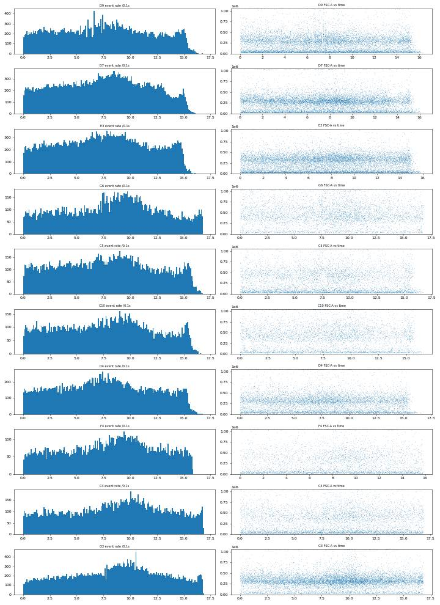
102
agent
No clogs or dry runs: every well ran about 16 s with the same mid-run rate hump. Now computing condition statistics and writing the summary and flag files.
103
tool call · Bash
cd /task; cat > work/analyse.py <<'EOF'
import numpy as np, pandas as pd, json
from scipy import stats
lay=pd.read_csv('/task/inputs/plate_layout.csv')
cnt=pd.read_csv('/task/outputs/counts.csv')
pv=cnt.pivot(index='well', columns='population', values='count')
df=lay.set_index('well').join(pv)
df['casp_live']=100*df.casp_pos/df.live; df['dead_pct']=100*df.dead/df.singlets; df['casp_all']=100*df.casp_pos_all/df.singlets
cmmap={'WT 24hr conditioned media':'CM24h','WT 48hr conditioned media':'CM48h','no conditioned media':'noCM'}
df['cm']=df.conditioned_media.map(cmmap)
df['row']=df.index.str[0]
dosemap={'10uM':'CPT10','5uM':'CPT5','2uM':'CPT2','DMSO':'DMSO'}
EXCL=['F8','D12']
df['used']=~df.index.isin(EXCL)
df.to_csv('/task/work/perwell.csv')
ab=df[df.row.isin(list('ABCDEF'))]
def well_order(ws):
return sorted(ws, key=lambda w:(w[0], int(w[1:])))
METRIC=('% caspase-3/7-positive of live singlets = 100 x casp_pos / live, per well (units: % of live singlet cells). '
'casp_pos = live events with compensated BL1-A (CellEvent Caspase-3/7 Green) >= 600; live = singlets with compensated BL2-A (SYTOX AADvanced) < 30000; '
'singlets = FSC-A/FSC-H polygon within cells = FSC-A/SSC-A polygon. Compensation from G7/G8 single stains (BL1->BL2 0.91, BL2->BL1 0.001).')
rows=[]
def add(name, sub, norm='none', note=''):
used=sub[sub.used]
v=used.casp_live.values
rows.append(dict(condition=name, wells=';'.join(well_order(used.index.tolist())), n_wells_used=len(v), mean=round(float(np.mean(v)),2),
sd=(round(float(np.std(v,ddof=1)),2) if len(v)>1 else ''), metric_definition=METRIC+note, normalisation_applied=norm))
# main: line x CM, pooled across camptothecin doses (0,2,5,10 uM) because dose had no detectable effect
for line in ['WT','E1','E3']:
for cm in ['noCM','CM24h','CM48h']:
sub=ab[(ab.cell_line==line)&(ab.cm==cm)]
add(f'{line}_{cm}', sub, note=' Pooled over camptothecin DMSO/2/5/10 uM wells (no dose effect detected) and plate rows (duplicate rows A/D, B/E, C/F).')
# untreated G-row and stain controls
add('WT_untreated', df.loc[['G2']], note=' Well not washed, no media change, no DMSO/camptothecin.')
add('E1_untreated', df.loc[['G5','G6']], note=' Wells not washed, no media change, no DMSO/camptothecin.')
add('E3_untreated', df.loc[['G3','G4']], note=' Wells not washed, no media change, no DMSO/camptothecin.')
add('ctrl_unstained_WT', df.loc[['G1']], note=' Unstained control (gate-setting).')
add('ctrl_caspase_only_WT', df.loc[['G7']], note=' CellEvent-only single-stain control.')
add('ctrl_LD_only_WT', df.loc[['G8']], note=' SYTOX AADvanced-only single-stain control.')
# per dose breakdown
for line in ['WT','E1','E3']:
for cm in ['noCM','CM24h','CM48h']:
for dose in ['DMSO','2uM','5uM','10uM']:
sub=ab[(ab.cell_line==line)&(ab.cm==cm)&(ab.camptothecin==dose)]
add(f'{line}_{cm}_{dosemap[dose]}', sub, note=f' Camptothecin {dose} wells only (duplicate rows).')
cs=pd.DataFrame(rows, columns=['condition','wells','n_wells_used','mean','sd','metric_definition','normalisation_applied'])
cs.to_csv('/task/outputs/condition_summary.csv', index=False)
print(cs[['condition','wells','n_wells_used','mean','sd']].to_string())
# statistics
def grp(line, cm, col='casp_live'):
s=ab[(ab.cell_line==line)&(ab.cm==cm)&ab.used]; return s[col].values
res={}
print('\nComparisons (Welch t, Mann-Whitney), primary metric')
for a,b in [(('WT','noCM'),('E1','noCM')),(('WT','noCM'),('E3','noCM')),
(('E1','noCM'),('E1','CM24h')),(('E1','noCM'),('E1','CM48h')),
(('E3','noCM'),('E3','CM24h')),(('E3','noCM'),('E3','CM48h')),
(('WT','noCM'),('WT','CM24h')),(('WT','noCM'),('WT','CM48h')),
(('WT','noCM'),('E1','CM24h')),(('WT','noCM'),('E3','CM24h'))]:
for col in ['casp_live','casp_all','dead_pct']:
x=grp(*a,col); y=grp(*b,col)
t=stats.ttest_ind(y,x,equal_var=False); u=stats.mannwhitneyu(y,x)
d=y.mean()-x.mean()
se=np.sqrt(x.var(ddof=1)/len(x)+y.var(ddof=1)/len(y))
dfw=se**4/((x.var(ddof=1)/len(x))**2/(len(x)-1)+(y.var(ddof=1)/len(y))**2/(len(y)-1))
ci=stats.t.ppf(0.975,dfw)*se
if col=='casp_live': res[f'{a[0]}_{a[1]}|{b[0]}_{b[1]}']=dict(diff=d, lo=d-ci, hi=d+ci, p=t.pvalue, ratio=y.mean()/x.mean(), na=len(x), nb=len(y))
print(f'{col:10s} {a[0]}_{a[1]} (n={len(x)}, {x.mean():.1f}) -> {b[0]}_{b[1]} (n={len(y)}, {y.mean():.1f}): diff {d:+.1f} pts [95% CI {d-ci:+.1f}, {d+ci:+.1f}], ratio {y.mean()/x.mean():.2f}, Welch p={t.pvalue:.2g}, MW p={u.pvalue:.2g}')
json.dump(res, open('/task/work/stats.json','w'), indent=1)
# camptothecin dose effect: within line x CM group, centred values vs dose
abu=ab[ab.used].copy()
abu['dose']=abu.camptothecin.map({'DMSO':0,'2uM':2,'5uM':5,'10uM':10})
abu['cent']=abu.casp_live-abu.groupby(['cell_line','cm']).casp_live.transform('mean')
sl=stats.linregress(abu.dose, abu.cent)
print('\nCPT dose effect (within-group centred): slope %.3f pts per uM, 95%% CI +/- %.3f, p=%.2f, n=%d'%(sl.slope, 1.96*sl.stderr, sl.pvalue, len(abu)))
d10=[]
for (l,c),g in abu.groupby(['cell_line','cm']):
m10=g[g.dose==10].casp_live.mean(); m0=g[g.dose==0].casp_live.mean(); d10.append(m10-m0)
print(f' {l} {c}: 10uM {m10:.1f} vs DMSO {m0:.1f}: {m10-m0:+.1f}')
d10=np.array(d10); print(' mean 10uM-DMSO across 9 groups %.1f pts (SD %.1f), paired t p=%.2f'%(d10.mean(), d10.std(ddof=1), stats.ttest_1samp(d10,0).pvalue))
for col in ['casp_all','dead_pct']:
abu['c2']=abu[col]-abu.groupby(['cell_line','cm'])[col].transform('mean')
s2=stats.linregress(abu.dose, abu.c2); print(f' {col} dose slope {s2.slope:.3f} p={s2.pvalue:.2f}')
# row effect
abu['rowpair']=abu.row.map({'A':1,'B':1,'C':1,'D':2,'E':2,'F':2})
for l in ['WT','E1','E3']:
g=abu[abu.cell_line==l]; print(l,'row1 mean %.1f row2 mean %.1f'%(g[g.rowpair==1].casp_live.mean(), g[g.rowpair==2].casp_live.mean()))
# sensitivity: include excluded wells
… [236 more characters not shown]104
tool output
condition wells n_wells_used mean sd 0 WT_noCM A9;A10;A11;A12;D9;D10;D11 7 22.09 2.92 1 WT_CM24h A1;A2;A3;A4;D1;D2;D3;D4 8 28.30 5.76 2 WT_CM48h A5;A6;A7;A8;D5;D6;D7;D8 8 25.44 2.86 3 E1_noCM B9;B10;B11;B12;E9;E10;E11;E12 8 61.06 5.06 4 E1_CM24h B1;B2;B3;B4;E1;E2;E3;E4 8 75.26 3.5 5 E1_CM48h B5;B6;B7;B8;E5;E6;E7;E8 8 75.62 1.92 6 E3_noCM C9;C10;C11;C12;F9;F10;F11;F12 8 20.02 6.22 7 E3_CM24h C1;C2;C3;C4;F1;F2;F3;F4 8 52.10 5.1 8 E3_CM48h C5;C6;C7;C8;F5;F6;F7 7 47.69 2.95 9 WT_untreated G2 1 3.82 10 E1_untreated G5;G6 2 6.85 0.41 11 E3_untreated G3;G4 2 5.89 0.1 12 ctrl_unstained_WT G1 1 0.19 13 ctrl_caspase_only_WT G7 1 4.37 14 ctrl_LD_only_WT G8 1 0.27 15 WT_noCM_DMSO A12 1 22.14 16 WT_noCM_CPT2 A11;D11 2 21.03 0.61 17 WT_noCM_CPT5 A10;D10 2 20.43 1.87 18 WT_noCM_CPT10 A9;D9 2 24.79 4.99 19 WT_CM24h_DMSO A4;D4 2 33.79 3.86 20 WT_CM24h_CPT2 A3;D3 2 26.72 4.33 21 WT_CM24h_CPT5 A2;D2 2 25.03 2.61 22 WT_CM24h_CPT10 A1;D1 2 27.67 10.22 23 WT_CM48h_DMSO A8;D8 2 28.23 5.03 24 WT_CM48h_CPT2 A7;D7 2 23.28 1.33 25 WT_CM48h_CPT5 A6;D6 2 24.51 1.52 26 WT_CM48h_CPT10 A5;D5 2 25.75 1.03 27 E1_noCM_DMSO B12;E12 2 57.89 5.97 28 E1_noCM_CPT2 B11;E11 2 67.27 2.88 29 E1_noCM_CPT5 B10;E10 2 58.75 1.55 30 E1_noCM_CPT10 B9;E9 2 60.32 4.91 31 E1_CM24h_DMSO B4;E4 2 76.28 6.19 32 E1_CM24h_CPT2 B3;E3 2 77.48 1.32 33 E1_CM24h_CPT5 B2;E2 2 74.67 4.33 34 E1_CM24h_CPT10 B1;E1 2 72.61 0.21 35 E1_CM48h_DMSO B8;E8 2 76.91 1.86 36 E1_CM48h_CPT2 B7;E7 2 76.49 1.84 37 E1_CM48h_CPT5 B6;E6 2 74.83 2.82 38 E1_CM48h_CPT10 B5;E5 2 74.25 1.16 39 E3_noCM_DMSO C12;F12 2 18.74 4.78 40 E3_noCM_CPT2 C11;F11 2 14.58 0.25 41 E3_noCM_CPT5 C10;F10 2 19.10 5.13 42 E3_noCM_CPT10 C9;F9 2 27.67 6.37 43 E3_CM24h_DMSO C4;F4 2 54.70 1.18 44 E3_CM24h_CPT2 C3;F3 2 47.14 2.2 45 E3_CM24h_CPT5 C2;F2 2 56.30 1.9 46 E3_CM24h_CPT10 C1;F1 2 50.28 8.24 47 E3_CM48h_DMSO C8 1 45.64 48 E3_CM48h_CPT2 C7;F7 2 45.74 0.63 49 E3_CM48h_CPT5 C6;F6 2 51.70 1.4 50 E3_CM48h_CPT10 C5;F5 2 46.67 1.98 Comparisons (Welch t, Mann-Whitney), primary metric casp_live WT_noCM (n=7, 22.1) -> E1_noCM (n=8, 61.1): diff +39.0 pts [95% CI +34.4, +43.6], ratio 2.76, Welch p=7.1e-10, MW p=0.00031 casp_all WT_noCM (n=7, 31.0) -> E1_noCM (n=8, 63.7): diff +32.7 pts [95% CI +28.5, +36.9], ratio 2.05, Welch p=1.5e-09, MW p=0.00031 dead_pct WT_noCM (n=7, 11.7) -> E1_noCM (n=8, 6.6): diff -5.0 pts [95% CI -7.1, -3.0], ratio 0.57, Welch p=0.00034, MW p=0.00062 casp_live WT_noCM (n=7, 22.1) -> E3_noCM (n=8, 20.0): diff -2.1 pts [95% CI -7.5, +3.4], ratio 0.91, Welch p=0.42, MW p=0.69 casp_all WT_noCM (n=7, 31.0) -> E3_noCM (n=8, 25.7): diff -5.3 pts [95% CI -11.7, +1.0], ratio 0.83, Welch p=0.09, MW p=0.04 dead_pct WT_noCM (n=7, 11.7) -> E3_noCM (n=8, 7.3): diff -4.4 pts [95% CI -7.9, -0.9], ratio 0.62, Welch p=0.019, MW p=0.054 casp_live E1_noCM (n=8, 61.1) -> E1_CM24h (n=8, 75.3): diff +14.2 pts [95% CI +9.5, +18.9], ratio 1.23, Welch p=2.4e-05, MW p=0.00016 casp_all E1_noCM (n=8, 63.7) -> E1_CM24h (n=8, 80.1): diff +16.4 pts [95% CI +12.1, +20.7], ratio 1.26, Welch p=1.9e-06, MW p=0.00016 dead_pct E1_noCM (n=8, 6.6) -> E1_CM24h (n=8, 19.6): diff +12.9 pts [95% CI +7.4, +18.4], ratio 2.94, Welch p=0.00049, MW p=0.00016 casp_live E1_noCM (n=8, 61.1) -> E1_CM48h (n=8, 75.6): diff +14.6 pts [95% CI +10.2, +18.9], ratio 1.24, Welch p=3.3e-05, MW p=0.00016 casp_all E1_noCM (n=8, 63.7) -> E1_CM48h (n=8, 80.1): diff +16.4 pts [95% CI +12.5, +20.4], ratio 1.26, Welch p=4.4e-06, MW p=0.00016 dead_pct E1_noCM (n=8, 6.6) -> E1_CM48h (n=8, 18.4): diff +11.8 pts [95% CI +7.0, +16.5], ratio 2.77, Welch p=0.00027, … [3,140 more characters not shown]
106
thinking
Conditioned media raised caspase activity in every line, and camptothecin had no dose effect. E1 starts elevated at baseline, while E3 does not; I'm loading the dataviz guidance before making the figure.
107
tool call · Skill
{
"skill": "dataviz"
}108
tool output
Launching skill: dataviz
109
tool call · Bash
cd /tmp/claude-0/bundled-skills/2.1.322/383530567887ef4d24be75eb286929bb/dataviz; sed -n 1,200p references/palette.md | head -120; which node
110
tool output (error)
Exit code 1
# Reference palette
This is the **reference instance** of the data-viz method: every parameter the
method needs, filled in with a validated default palette. The rest of the skill
is system-agnostic - **to target your brand, substitute this file's values** and
re-run the validator. Nothing else changes.
## How to use these values
Everything below is plain hex. In an HTML chart, **define the slots you use as
CSS custom properties in a local `<style>` block** at the top of the file, then
reference them by role throughout - so the light/dark values swap in one place,
and the chart body is written against roles rather than raw hex:
```css
.viz-root {
color-scheme: light;
--surface-1: #fcfcfb; /* chart surface */
--text-primary: #0b0b0b;
--text-secondary: #52514e;
--series-1: #2a78d6; /* categorical slot 1 */
/* ...only the roles this chart uses */
}
@media (prefers-color-scheme: dark) {
:root:where(:not([data-theme="light"])) .viz-root {
color-scheme: dark;
--surface-1: #1a1a19;
--text-primary: #f0efec;
--text-secondary: #c3c2b7;
--series-1: #3987e5;
}
}
:root[data-theme="dark"] .viz-root {
color-scheme: dark;
--surface-1: #1a1a19;
--text-primary: #f0efec;
--text-secondary: #c3c2b7;
--series-1: #3987e5;
}
```
Declare the dark values under both scopes as above - the media query covers
the OS setting; the `data-theme` scope covers the viewer's theme toggle,
which must win both ways (the `:not(...)` guard lets a light stamp beat
OS-dark; `:where()` keeps the media block below the toggle scope).
## Categorical palette
Both modes are selected. The dark column is the same eight hues stepped for the
dark surface, not a separate palette:
| Slot | Hue | Light | Dark |
|------|-----|-------|------|
| 1 | blue | `#2a78d6` | `#3987e5` |
| 2 | orange | `#eb6834` | `#d95926` |
| 3 | aqua | `#1baf7a` | `#199e70` |
| 4 | yellow | `#eda100` | `#c98500` |
| 5 | magenta | `#e87ba4` | `#d55181` |
| 6 | green | `#008300` | `#008300` |
| 7 | violet | `#6250d6` | `#9085e9` |
| 8 | red | `#e34948` | `#e66767` |
This order passes every hard gate in both modes on the default *adjacent*
pairlist (stacks, bars, lines): worst adjacent CVD Delta E 9.1 light / 8.4 dark
(OKLab ×100, >=8 target), worst adjacent normal-vision Delta E 19.6 light / 19.3
dark (>=15 floor). Under `--pairs all` (scatter, bubble, choropleth, small
multiples) the full eight cannot clear the floors - with all 28 pairs in
play no ordering can (the pairlist no longer depends on order), and
re-stepping is off the table by the documented-palette rule - so those
chart forms carry a series cap: **the first three slots validate all-pairs
in both modes** (worst pair CVD Delta E 9.2 light / 9.4 dark, normal-vision 24.0
light / 20.9 dark - clear of the CVD warn band). Past three, fold to "Other" or
facet: the fourth slot puts yellow and orange on screen
together, and that pair fails the all-pairs floors (normal-vision 13.7
light; CVD 4.8 dark). Three light-mode slots (magenta, yellow, aqua)
sit below 3:1 contrast on the light surface: the **relief rule** applies (ship
visible direct labels or the table view). The dark steps were chosen for the
dark band (OKLCH L ~ 0.48-0.67, >= 3:1 on the dark surface) and validated as a
set. (Ordering history: adopted July 2026 for its more harmonious opening -
the same eight hues and steps as its predecessor, re-ordered, zero hex
changes. The predecessor validated its first FOUR slots all-pairs, with its
dark run in the 6-8 CVD warn band, so secondary encoding was required there;
this order deliberately trades that fourth slot - yellow now sits beside orange -
for better-looking leading colors. Revisit the trade if yellow<->orange
confusion shows up in real charts with four or more series; undoing it is a
pure re-order. Light slot 7 has since been lightened, `#4a3aa7` -> `#6250d6`
(August 2026); the adjacent-pair figures above are unchanged by that move, the
non-adjacent blue<->violet pair now sits below both floors under `--pairs all`
(normal-vision 10.5, CVD 4.5 - inside the range the series cap already
excludes), and the order enumeration was run with the earlier value.) When you
swap in your own ramps, hold your palette to the full gate.
The slot **ordering** is the CVD-safety mechanism, not cosmetic - candidate
orderings were enumerated and only those clearing every adjacent gate in both
modes kept (see `color-formula.md` § Themes); this default is one of the
passing orders, picked among them for its opening colors. When you swap in
your brand's hues, do the same: run the validator on candidate orderings and
choose only among the passing ones.
## Sequential hue
Default single hue: **blue**, light->dark. When two sequential contexts appear at
once, the second takes the next categorical slot's hue (orange), each as its own
one-hue ramp.
| step | hex | step | hex | step | hex | step | hex |
|---|---|---|---|---|---|---|---|
| 100 | `#cde2fb` | 250 | `#86b6ef` | 400 | `#3987e5` | 550 | `#1c5cab` |
| 150 | `#b7d3f6` | 300 | `#6da7ec` | 450 | `#2a78d6` | 600 | `#184f95` |
| 200 | `#9ec5f4` | 350 | `#5598e7` | 500 | `#256abf` | 650 | `#104281` |
| | | | | | | 700 | `#0d366b` |
The full 100->700 range is for **sequential** encoding (continuous magnitude -
heatmaps, choropleths) where the lightest step means "near zero" and is allowed
to recede toward the surface. For an **ordinal** ramp (discrete ordered marks -
funnel stages, tiers - validated with `--ordinal`), the step nearest the surface
must still clear 2:1: on light, start no lighter than **step 250** (`#86b6ef`,
2.06:1); on dark, go no darker than **step 600** (`#184f95`, 2.15:1).
## Diverging pair112
thinking
Node isn't available, so I can't run the palette validator; I'll use the reference palette's first three categorical slots instead and add marker shapes as a second encoding.
113
tool call · Bash
cd /task; cat > work/figure.py <<'EOF'
import numpy as np, pandas as pd, matplotlib; matplotlib.use('Agg'); import matplotlib.pyplot as plt
df=pd.read_csv('/task/work/perwell.csv', index_col=0)
ab=df[df.row.isin(list('ABCDEF'))]
COL={'noCM':'#2a78d6','CM24h':'#eb6834','CM48h':'#1baf7a'}
MK={'noCM':'o','CM24h':'s','CM48h':'D'}
LAB={'noCM':'No conditioned media','CM24h':'WT conditioned media, 24 h','CM48h':'WT conditioned media, 48 h'}
TXT='#0b0b0b'; TXT2='#52514e'; GRID='#e4e3df'
plt.rcParams.update({'font.size':10,'axes.edgecolor':TXT2,'axes.labelcolor':TXT,'xtick.color':TXT2,'ytick.color':TXT2})
fig,(ax,bx)=plt.subplots(1,2, figsize=(14,5.6), gridspec_kw={'width_ratios':[1.35,1]})
lines=['WT','E1','E3']; cms=['noCM','CM24h','CM48h']
rng=np.random.default_rng(1)
wt_base=ab[(ab.cell_line=='WT')&(ab.cm=='noCM')&ab.used].casp_live.mean()
ax.axhline(wt_base, color=TXT2, lw=1, ls='--', zorder=1)
ax.text(2.62, wt_base+1.2, f'WT, no CM\nmean {wt_base:.1f}%', color=TXT2, fontsize=8.5, ha='right', va='bottom')
for i,l in enumerate(lines):
for j,c in enumerate(cms):
x0=i+(j-1)*0.27
g=ab[(ab.cell_line==l)&(ab.cm==c)]
u=g[g.used]; e=g[~g.used]
m=u.casp_live.mean(); sd=u.casp_live.std()
ax.bar(x0, m, width=0.22, color=COL[c], alpha=0.28, edgecolor='none', zorder=2)
ax.errorbar(x0, m, yerr=sd, color=TXT, lw=1.2, capsize=3, zorder=4)
jit=rng.uniform(-0.06,0.06,len(u))
ax.scatter(x0+jit, u.casp_live, s=30, marker=MK[c], color=COL[c], edgecolor='white', linewidth=0.8, zorder=5, label=LAB[c] if i==0 else None)
for w,v in e.casp_live.items():
ax.scatter(x0, v, s=40, marker='x', color=TXT, zorder=6, label='Excluded well' if (w=='F8') else None)
ax.annotate(w, (x0, v), xytext=(6,-3), textcoords='offset points', fontsize=8, color=TXT2)
ax.text(x0, m+sd+1.5, f'{m:.0f}', ha='center', va='bottom', fontsize=8.5, color=TXT)
# untreated G-row
UNT={'WT':['G2'],'E1':['G5','G6'],'E3':['G3','G4']}
for i,l in enumerate(lines):
v=df.loc[UNT[l],'casp_live']
ax.scatter([i+0.45]*len(v), v, s=26, marker='v', color='#8a8984', zorder=5, label='Untreated (no wash/media change/DMSO), row G' if i==0 else None)
ax.set_xticks(range(3)); ax.set_xticklabels(['H4 WT','PGRN-KO E1','PGRN-KO E3'])
ax.set_xlim(-0.55,2.62); ax.set_ylim(0,92)
ax.set_ylabel('Caspase-3/7+ cells (% of live singlets)')
ax.set_title('A. Conditioned media raised caspase-3/7+ in all three lines', loc='left', fontsize=11, color=TXT)
ax.grid(axis='y', color=GRID, lw=0.8); ax.set_axisbelow(True)
for s in ['top','right']: ax.spines[s].set_visible(False)
ax.legend(loc='upper left', fontsize=8.2, frameon=False, ncol=1)
ax.text(-0.5,-12.5,'Bars = mean ± SD over wells (camptothecin 0/2/5/10 µM pooled, rows A–F; n = 8, or 7 where a well was excluded). Points = individual wells.', fontsize=7.8, color=TXT2, transform=ax.transData, clip_on=False)
# panel B: CPT dose response
dose={'DMSO':0,'2uM':2,'5uM':5,'10uM':10}
xpos={0:0,2:1,5:2,10:3}
for l,ls in zip(lines,['-','--',':']):
for c in cms:
g=ab[(ab.cell_line==l)&(ab.cm==c)&ab.used].copy(); g['d']=g.camptothecin.map(dose)
mm=g.groupby('d').casp_live.mean()
bx.plot([xpos[d] for d in mm.index], mm.values, ls=ls, color=COL[c], lw=2, marker=MK[c], ms=6, markeredgecolor='white')
gl=ab[(ab.cell_line==l)&ab.used].copy(); gl['d']=gl.camptothecin.map(dose)
last=gl[(gl.cm=='CM24h')&(gl.d==10)].casp_live.mean()
for l,y in zip(lines,[29,83,60]):
pass
bx.text(3.08, 76, 'E1', fontsize=9, color=TXT, va='center'); bx.text(3.08, 50, 'E3', fontsize=9, color=TXT, va='center'); bx.text(3.08, 25, 'WT', fontsize=9, color=TXT, va='center')
bx.text(3.08, 60, 'E1', fontsize=9, color=TXT2, va='center'); bx.text(3.08, 27.7+2, '', fontsize=9)
bx.set_xticks(range(4)); bx.set_xticklabels(['DMSO','2','5','10']); bx.set_xlabel('Camptothecin (µM)')
bx.set_ylim(0,92); bx.set_xlim(-0.3,3.45)
bx.set_ylabel('Caspase-3/7+ cells (% of live singlets)')
bx.set_title('B. No camptothecin dose response (mean of 2 wells)', loc='left', fontsize=11, color=TXT)
bx.grid(axis='y', color=GRID, lw=0.8); bx.set_axisbelow(True)
for s in ['top','right']: bx.spines[s].set_visible(False)
from matplotlib.lines import Line2D
h=[Line2D([],[],color=TXT2,ls='-',lw=2,label='WT'),Line2D([],[],color=TXT2,ls='--',lw=2,label='E1'),Line2D([],[],color=TXT2,ls=':',lw=2,label='E3')]
bx.legend(handles=h, title='Line style = cell line; colour = media (as in A)', fontsize=8, title_fontsize=8, frameon=False, loc='upper left', ncol=3)
fig.suptitle('H4 caspase-3/7 (CellEvent) flow assay, 02-Dec-2022: WT progranulin-conditioned media did not lower caspase activity in PGRN-KO lines', fontsize=11.5, color=TXT, x=0.01, ha='left')
plt.tight_layout(rect=[0,0.03,1,0.95])
plt.savefig('/task/outputs/figure.png', dpi=150)
EOF
python3 -I work/figure.py114
tool output
(Bash completed with no output)
115
tool call · Read
{
"file_path": "/task/outputs/figure.png"
}116
tool output
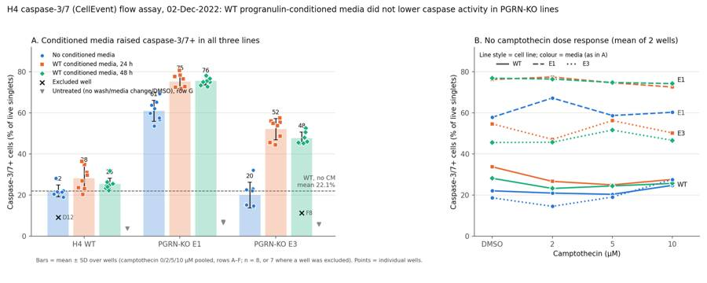
118
agent
The first draft has overlapping labels. Fixing the layout:
119
tool call · Bash
cd /task; python3 - <<'EOF'
import re
s=open('/task/work/figure.py').read()
s=s.replace("ax.text(x0, m+sd+1.5, f'{m:.0f}', ha='center', va='bottom', fontsize=8.5, color=TXT)",
"ax.text(x0, max(m+sd, u.casp_live.max())+1.8, f'{m:.1f}', ha='center', va='bottom', fontsize=8.5, color=TXT)")
s=s.replace("ax.legend(loc='upper left', fontsize=8.2, frameon=False, ncol=1)",
"ax.legend(loc='upper center', bbox_to_anchor=(0.5,-0.09), fontsize=8.2, frameon=False, ncol=3)")
s=s.replace("ax.text(-0.5,-12.5,", "ax.text(-0.5,-27,")
# remove messy direct labels in panel B
s=re.sub(r"bx\.text\(3\.08.*\n", "", s)
s=s.replace("bx.set_ylim(0,92); bx.set_xlim(-0.3,3.45)","bx.set_ylim(0,92); bx.set_xlim(-0.3,3.3)")
s=s.replace("figsize=(14,5.6)","figsize=(14,6.6)")
s=s.replace("rect=[0,0.03,1,0.95]","rect=[0,0.0,1,0.95]")
s=s.replace("bx.legend(handles=h, title='Line style = cell line; colour = media (as in A)', fontsize=8, title_fontsize=8, frameon=False, loc='upper left', ncol=3)",
"bx.legend(handles=h, title='Line style = cell line; colour = media (as in A)', fontsize=8, title_fontsize=8, frameon=False, loc='upper center', bbox_to_anchor=(0.5,-0.13), ncol=3)\nfor txt,y,c in [('E1 + CM',79.5,TXT),('E1, no CM',63.5,TXT),('E3 + CM',57.5,TXT),('WT (all media) and E3, no CM',31.5,TXT)]:\n bx.text(1.5, y, txt, fontsize=8.5, color=TXT2, ha='center')")
open('/task/work/figure.py','w').write(s)
EOF
python3 -I work/figure.py120
tool call · Read
{
"file_path": "/task/outputs/figure.png"
}121
tool output
(Bash completed with no output)
122
tool output
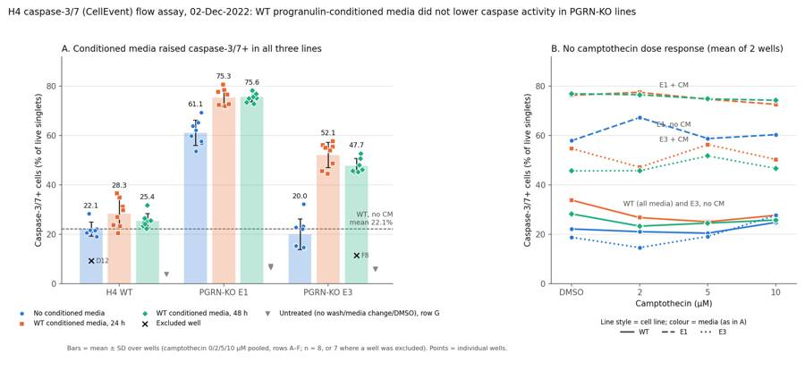
124
tool call · Bash
cd /task; python3 - <<'EOF'
s=open('/task/work/figure.py').read()
s=s.replace("for txt,y,c in [('E1 + CM',79.5,TXT),('E1, no CM',63.5,TXT),('E3 + CM',57.5,TXT),('WT (all media) and E3, no CM',31.5,TXT)]:\n bx.text(1.5, y, txt, fontsize=8.5, color=TXT2, ha='center')",
"for txt,x,y in [('E1 + CM',1.5,79.5),('E1, no CM',2.5,63.5),('E3 + CM',2.5,42),('WT (all media) and E3, no CM',1.5,31.5)]:\n bx.text(x, y, txt, fontsize=8.5, color=TXT2, ha='center')")
open('/task/work/figure.py','w').write(s)
EOF
python3 -I work/figure.py125
tool call · Read
{
"file_path": "/task/outputs/figure.png"
}126
tool output
(Bash completed with no output)
127
tool output
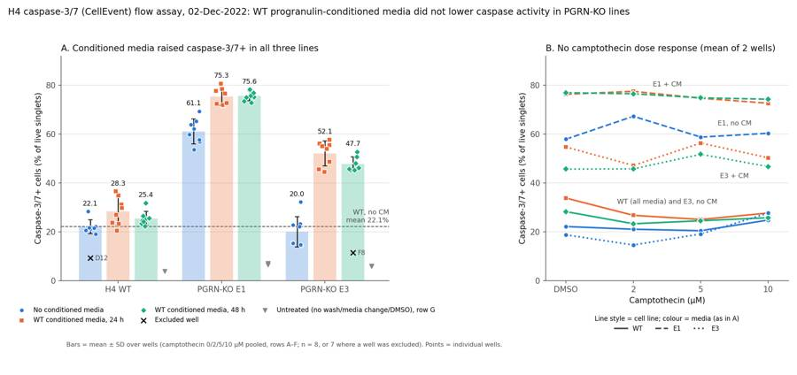
129
agent
Figure done. Writing flags.csv next.
130
tool call · Bash
cd /task; cat > work/flags.py <<'EOF'
import pickle, numpy as np, pandas as pd
data = pickle.load(open('/task/work/raw.pkl','rb'))
lay=pd.read_csv('/task/inputs/plate_layout.csv')
pw=pd.read_csv('/task/work/perwell.csv', index_col=0)
M=1048575
sat={}
for f,w in zip(lay.file, lay.well):
d=data[f]; s=((d['FSC-A']>=M)|(d['SSC-A']>=M)); sat[w]=(100*s.mean(), d['FSC-W'][s].median(), d['FSC-W'].median())
med_live=int(pw.live.median())
rows=[]
for _,r in lay.iterrows():
w=r.well; p=pw.loc[w]
issue='none'; ev=''; dec='keep'
s,fw_sat,fw_all=sat[w]
if w=='F8':
issue='other'; dec='exclude'
ev=(f'Treatment-response outlier: caspase-3/7+ = {p.casp_live:.1f}% of live singlets vs 45.3-52.7% in the other 7 E3 + WT 48 h CM wells (C5-C8, F5-F7; group median 45.9%, robust z = -16.6) '
f'and 45.6% in its DMSO duplicate C8. Its BL1/BL2 distributions match E3 wells without CM (KS D = 0.09-0.10 vs F10/F11, against 0.32-0.39 vs its own condition), and cells/all events is {100*p.cells/p.all_events if "all_events" in p else 0:.0f}%. '
f'Most likely the CM was not added or the well was mis-recorded; this cannot be told apart from a mislabel. Also {s:.1f}% of events saturated on FSC-A/SSC-A.')
elif w=='D12':
issue='other'; dec='exclude'
ev=(f'Treatment-response outlier: caspase-3/7+ = {p.casp_live:.1f}% of live singlets vs 19.1-28.3% in the other 7 WT no-CM wells (A9-A12, D9-D11; median 21.4%, robust z = -10.6) and 22.1% in its DMSO duplicate A12; '
f'total caspase+ {p.casp_all:.1f}% vs 28-36%. Its fluorescence profile is closer to untreated WT G2 (KS D BL1 0.12) than to D10/D11 (0.15-0.16), and its cells/all events is {100*p.cells/27746:.0f}%; '
'a suspected handling difference. Including it would lower the WT no-CM mean from 22.1% to 20.5% and would not change the conclusion.')
elif p.live < 5000:
issue='too_few_events'; dec='keep_with_note'
ev=(f'Only {int(p.all_events if "all_events" in p else 0)} events and {int(p.live)} live singlets (plate median {med_live}); the binomial SE of %caspase+ is about {100*np.sqrt(p.casp_live/100*(1-p.casp_live/100)/p.live):.1f} points, which is still adequate. '
f'E3 F-row wells have heavy debris (cells = {100*p.cells/(p.all_events if "all_events" in p else 1):.0f}% of events). Also {s:.1f}% of events saturated on FSC/SSC.')
elif s>5:
issue='saturation'; dec='keep_with_note'
ev=(f'{s:.1f}% of events at the FSC-A/SSC-A ceiling (1048575); these are mostly wide pulses (median FSC-W {fw_sat:.0f} vs {fw_all:.0f} for all events), i.e. aggregates or large E3/E1 cells at SSC 290 V. '
'They fall outside the cells gate (upper edge 1.04e6) and are not scored. Fluorescence saturation is below 0.03%.')
rows.append(dict(file=r.file, well=w, issue_type=issue, evidence=ev, decision=dec))
fl=pd.DataFrame(rows, columns=['file','well','issue_type','evidence','decision'])
fl.to_csv('/task/outputs/flags.csv', index=False)
print(fl[fl.issue_type!='none'][['well','issue_type','decision','evidence']].to_string(max_colwidth=120))
EOF
python3 -I work/flags.py131
tool output
well issue_type decision evidence 24 C1 saturation keep_with_note 5.1% of events at the FSC-A/SSC-A ceiling (1048575); these are mostly wide pulses (median FSC-W 209 vs 133 for all e... 26 C3 saturation keep_with_note 5.3% of events at the FSC-A/SSC-A ceiling (1048575); these are mostly wide pulses (median FSC-W 209 vs 134 for all e... 32 C9 saturation keep_with_note 5.4% of events at the FSC-A/SSC-A ceiling (1048575); these are mostly wide pulses (median FSC-W 214 vs 138 for all e... 33 C10 saturation keep_with_note 6.3% of events at the FSC-A/SSC-A ceiling (1048575); these are mostly wide pulses (median FSC-W 206 vs 143 for all e... 34 C11 saturation keep_with_note 7.5% of events at the FSC-A/SSC-A ceiling (1048575); these are mostly wide pulses (median FSC-W 203 vs 139 for all e... 47 D12 other exclude Treatment-response outlier: caspase-3/7+ = 9.3% of live singlets vs 19.1-28.3% in the other 7 WT no-CM wells (A9-A12... 60 F1 too_few_events keep_with_note Only 11614 events and 4443 live singlets (plate median 14035); the binomial SE of %caspase+ is about 0.7 points, whi... 63 F4 too_few_events keep_with_note Only 11834 events and 3533 live singlets (plate median 14035); the binomial SE of %caspase+ is about 0.8 points, whi... 64 F5 too_few_events keep_with_note Only 14031 events and 4544 live singlets (plate median 14035); the binomial SE of %caspase+ is about 0.7 points, whi... 65 F6 too_few_events keep_with_note Only 14662 events and 4650 live singlets (plate median 14035); the binomial SE of %caspase+ is about 0.7 points, whi... 67 F8 other exclude Treatment-response outlier: caspase-3/7+ = 11.5% of live singlets vs 45.3-52.7% in the other 7 E3 + WT 48 h CM wells... 68 F9 saturation keep_with_note 6.4% of events at the FSC-A/SSC-A ceiling (1048575); these are mostly wide pulses (median FSC-W 233 vs 115 for all e... 69 F10 saturation keep_with_note 7.4% of events at the FSC-A/SSC-A ceiling (1048575); these are mostly wide pulses (median FSC-W 226 vs 123 for all e... 70 F11 saturation keep_with_note 7.2% of events at the FSC-A/SSC-A ceiling (1048575); these are mostly wide pulses (median FSC-W 202 vs 129 for all e... 71 F12 saturation keep_with_note 5.1% of events at the FSC-A/SSC-A ceiling (1048575); these are mostly wide pulses (median FSC-W 194 vs 128 for all e... 76 G5 saturation keep_with_note 7.5% of events at the FSC-A/SSC-A ceiling (1048575); these are mostly wide pulses (median FSC-W 203 vs 147 for all e... 77 G6 saturation keep_with_note 9.2% of events at the FSC-A/SSC-A ceiling (1048575); these are mostly wide pulses (median FSC-W 210 vs 144 for all e...
133
tool call · Bash
cd /task; head -1 work/perwell.csv; sed -i 's|{100\*p.cells/27746:.0f}%; |{100*p.cells/p.all_events:.0f}% (others in group 59-67%); |' work/flags.py; python3 -I work/flags.py >/dev/null; python3 -I -c "
import pandas as pd; f=pd.read_csv('/task/outputs/flags.csv')
for w in ['F8','D12','F1','C11']: print(w, f[f.well==w].evidence.values[0], '\n')
print(f.issue_type.value_counts(), f.decision.value_counts(), len(f))"134
tool output
well,file,sample,cell_line,camptothecin,conditioned_media,all_events,casp_pos,casp_pos_all,cells,dead,live,singlets,casp_live,dead_pct,casp_all,cm,row,used F8 Treatment-response outlier: caspase-3/7+ = 11.5% of live singlets vs 45.3-52.7% in the other 7 E3 + WT 48 h CM wells (C5-C8, F5-F7; group median 45.9%, robust z = -16.6) and 45.6% in its DMSO duplicate C8. Its BL1/BL2 distributions match E3 wells without CM (KS D = 0.09-0.10 vs F10/F11, against 0.32-0.39 vs its own condition), and cells/all events is 68%. Most likely the CM was not added or the well was mis-recorded; this cannot be told apart from a mislabel. Also 9.4% of events saturated on FSC-A/SSC-A. D12 Treatment-response outlier: caspase-3/7+ = 9.3% of live singlets vs 19.1-28.3% in the other 7 WT no-CM wells (A9-A12, D9-D11; median 21.4%, robust z = -10.6) and 22.1% in its DMSO duplicate A12; total caspase+ 17.9% vs 28-36%. Its fluorescence profile is closer to untreated WT G2 (KS D BL1 0.12) than to D10/D11 (0.15-0.16), and its cells/all events is 80% (others in group 59-67%); a suspected handling difference. Including it would lower the WT no-CM mean from 22.1% to 20.5% and would not change the conclusion. F1 Only 11614 events and 4443 live singlets (plate median 14035); the binomial SE of %caspase+ is about 0.7 points, which is still adequate. E3 F-row wells have heavy debris (cells = 56% of events). Also 4.6% of events saturated on FSC/SSC. C11 7.5% of events at the FSC-A/SSC-A ceiling (1048575); these are mostly wide pulses (median FSC-W 203 vs 139 for all events), i.e. aggregates or large E3/E1 cells at SSC 290 V. They fall outside the cells gate (upper edge 1.04e6) and are not scored. Fluorescence saturation is below 0.03%. issue_type none 63 saturation 11 too_few_events 4 other 2 Name: count, dtype: int64 decision keep 63 keep_with_note 15 exclude 2 Name: count, dtype: int64 80
136
tool call · Bash
cd /task; python3 - <<'EOF'
s=open('/task/work/flags.py').read()
s=s.replace("and cells/all events is {100*p.cells/p.all_events if \"all_events\" in p else 0:.0f}%. ",
"and cells/all events is {100*p.cells/p.all_events:.0f}% (48-53% in the other E3 + 48 h CM wells). ")
s=s.replace("sat[w]=(100*s.mean(), d['FSC-W'][s].median(), d['FSC-W'].median())",
"sat[w]=(100*s.mean(), d['FSC-W'][s].median(), d['FSC-W'].median(), 100*((d['BL1-A']>=M)|(d['BL2-A']>=M)).mean())")
s=s.replace("s,fw_sat,fw_all=sat[w]","s,fw_sat,fw_all,fl_sat=sat[w]")
s=s.replace("'They fall outside the cells gate (upper edge 1.04e6) and are not scored. Fluorescence saturation is below 0.03%.')",
"f'They fall outside the cells gate (upper edge 1.04e6) and are not scored. BL1/BL2 saturation is {fl_sat:.3f}% of events.')")
open('/task/work/flags.py','w').write(s)
EOF
python3 -I work/flags.py | cut -c1-60 >/dev/null; python3 -I -c "
import pandas as pd; f=pd.read_csv('/task/outputs/flags.csv')
for w in ['F8','G6','C1']: print(w, f[f.well==w].evidence.values[0], '\n')"137
tool output
F8 Treatment-response outlier: caspase-3/7+ = 11.5% of live singlets vs 45.3-52.7% in the other 7 E3 + WT 48 h CM wells (C5-C8, F5-F7; group median 45.9%, robust z = -16.6) and 45.6% in its DMSO duplicate C8. Its BL1/BL2 distributions match E3 wells without CM (KS D = 0.09-0.10 vs F10/F11, against 0.32-0.39 vs its own condition), and cells/all events is 68% (48-53% in the other E3 + 48 h CM wells). Most likely the CM was not added or the well was mis-recorded; this cannot be told apart from a mislabel. Also 9.4% of events saturated on FSC-A/SSC-A. G6 9.2% of events at the FSC-A/SSC-A ceiling (1048575); these are mostly wide pulses (median FSC-W 210 vs 144 for all events), i.e. aggregates or large E3/E1 cells at SSC 290 V. They fall outside the cells gate (upper edge 1.04e6) and are not scored. BL1/BL2 saturation is 0.000% of events. C1 5.1% of events at the FSC-A/SSC-A ceiling (1048575); these are mostly wide pulses (median FSC-W 209 vs 133 for all events), i.e. aggregates or large E3/E1 cells at SSC 290 V. They fall outside the cells gate (upper edge 1.04e6) and are not scored. BL1/BL2 saturation is 0.011% of events.
139
agent
Flags written: 2 excluded (D12, F8), 15 keep_with_note, 63 keep. Next, a gating overview plot for the report and a check of the alternative plate-map reading.
140
tool call · Bash
cd /task; cat > work/gatefig.py <<'EOF'
import pickle, numpy as np, pandas as pd, matplotlib; matplotlib.use('Agg'); import matplotlib.pyplot as plt
from matplotlib.colors import LogNorm
from matplotlib.path import Path
data = pickle.load(open('/task/work/raw.pkl','rb'))
CELLS=[(1.0e5,4.0e4),(1.04e6,4.0e4),(1.04e6,1.04e6),(1.0e5,1.04e6)]
SING=[(1.0e5,0.40e5),(3.0e5,1.26e5),(5.0e5,2.1e5),(7.0e5,2.8e5),(1.04e6,3.9e5),(1.04e6,7.0e5),(1.0e5,1.1e5)]
Si=np.linalg.inv(np.array([[1,0.91],[0.001,1]]))
def asinh(x,c=150): return np.arcsinh(x/c)
wells=[('G1','WT unstained'),('G7','WT CellEvent only'),('G8','WT SYTOX AADvanced only'),('A12','WT DMSO, no CM'),('B12','E1 DMSO, no CM'),('B4','E1 DMSO, WT CM 24 h')]
fig,ax=plt.subplots(3,len(wells),figsize=(4*len(wells),11.5))
for j,(w,t) in enumerate(wells):
d=data[f'Caspase-assay-2-mlk_caspase_Group_{w}.fcs']
a=ax[0,j]; a.hist2d(d['FSC-A'],d['SSC-A'],bins=200,range=[[0,1.05e6],[0,1.05e6]],cmap='viridis',cmin=1,norm=LogNorm())
P=np.array(CELLS+[CELLS[0]]); a.plot(P[:,0],P[:,1],'r-',lw=1.5); a.set_title(f'{w}: {t}\ncells (FSC-A vs SSC-A)',fontsize=9); a.set_xlabel('FSC-A'); a.set_ylabel('SSC-A')
c=d[Path(CELLS).contains_points(d[['FSC-A','SSC-A']].values)]
a=ax[1,j]; a.hist2d(c['FSC-A'],c['FSC-H'],bins=200,range=[[0,1.05e6],[0,6e5]],cmap='viridis',cmin=1,norm=LogNorm())
P=np.array(SING+[SING[0]]); a.plot(P[:,0],P[:,1],'r-',lw=1.5); a.set_title('singlets (FSC-A vs FSC-H)',fontsize=9); a.set_xlabel('FSC-A'); a.set_ylabel('FSC-H')
s=c[Path(SING).contains_points(c[['FSC-A','FSC-H']].values)]
comp=s[['BL1-A','BL2-A']].values@Si
a=ax[2,j]; a.hist2d(asinh(comp[:,0]),asinh(comp[:,1]),bins=200,range=[[-3,8],[-3,10]],cmap='viridis',cmin=1,norm=LogNorm())
a.axhline(asinh(30000),color='r',lw=1.5); a.plot([asinh(600)]*2,[-3,asinh(30000)],'r-',lw=1.5)
live=comp[:,1]<30000; cp=(comp[:,0]>=600)&live
a.text(-2.8,9.2,f'dead {100*(~live).mean():.1f}% of singlets',color='r',fontsize=8); a.text(4.0,1,f'casp+ {100*cp.sum()/live.sum():.1f}%\nof live',color='r',fontsize=8)
tk=[-1000,0,1000,1e4,1e5,1e6]; a.set_xticks(asinh(np.array(tk[:-1]))); a.set_xticklabels(['-1e3','0','1e3','1e4','1e5'],fontsize=7)
a.set_yticks(asinh(np.array(tk))); a.set_yticklabels(['-1e3','0','1e3','1e4','1e5','1e6'],fontsize=7)
a.set_xlabel('BL1-A comp (CellEvent caspase-3/7)'); a.set_ylabel('BL2-A comp (SYTOX AADvanced)'); a.set_title('live: BL2<30000; casp_pos: BL1>=600',fontsize=9)
plt.tight_layout(); plt.savefig('/task/outputs/gating_overview.png',dpi=70)
EOF
python3 -I work/gatefig.py
python3 -I - <<'EOF'
import pandas as pd
df=pd.read_csv('/task/work/perwell.csv',index_col=0); df=df[df.used & df.row.isin(list('ABCDEF'))]
df['col']=df.index.str[1:].astype(int); df['cmcols']=df.col<=8
print('Per row: CM wells (cols 1-8) vs no-CM wells (cols 9-12), mean %casp+ of live')
print(df.groupby(['row','cmcols']).casp_live.mean().unstack().round(1))
EOF141
tool output
Per row: CM wells (cols 1-8) vs no-CM wells (cols 9-12), mean %casp+ of live cmcols False True row A 20.8 24.2 B 60.5 73.7 C 18.8 51.2 D 23.8 29.5 E 61.7 77.2 F 21.3 48.7
142
tool call · Read
{
"file_path": "/task/outputs/gating_overview.png"
}143
tool output
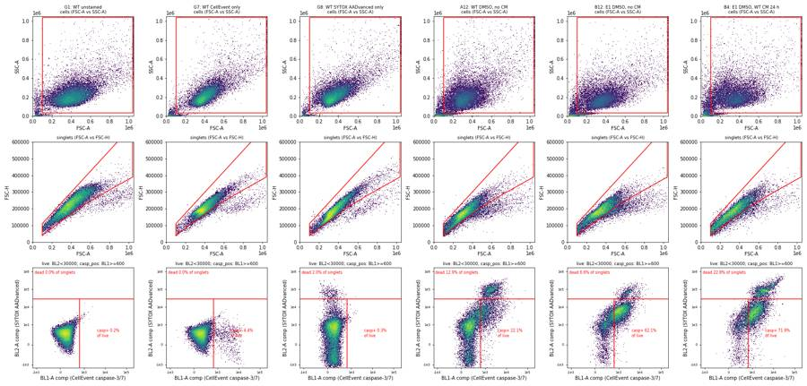
145
agent
Gating looks right across controls and test wells. Quick threshold-sensitivity check before writing the report:
146
tool call · Bash
cd /task; cat > work/sens.py <<'EOF'
import pickle, numpy as np, pandas as pd
from matplotlib.path import Path
data = pickle.load(open('/task/work/raw.pkl','rb'))
pw=pd.read_csv('/task/work/perwell.csv', index_col=0)
CELLS=[(1.0e5,4.0e4),(1.04e6,4.0e4),(1.04e6,1.04e6),(1.0e5,1.04e6)]
SING=[(1.0e5,0.40e5),(3.0e5,1.26e5),(5.0e5,2.1e5),(7.0e5,2.8e5),(1.04e6,3.9e5),(1.04e6,7.0e5),(1.0e5,1.1e5)]
Si=np.linalg.inv(np.array([[1,0.91],[0.001,1]]))
comp={}
for w,f in pw.file.items():
d=data[f]; c=d[Path(CELLS).contains_points(d[['FSC-A','SSC-A']].values)]; s=c[Path(SING).contains_points(c[['FSC-A','FSC-H']].values)]
comp[w]=s[['BL1-A','BL2-A']].values@Si
ab=pw[pw.row.isin(list('ABCDEF')) & pw.used]
out=[]
for tc in [450,600,800,1000]:
for td in [20000,30000,45000]:
v={w:100*((comp[w][:,0]>=tc)&(comp[w][:,1]<td)).sum()/(comp[w][:,1]<td).sum() for w in ab.index}
s=pd.Series(v); g=ab.assign(m=s).groupby(['cell_line','cm']).m.mean()
out.append(dict(T_casp=tc,T_dead=td, **{f'{l}_{c}':round(g[(l,c)],1) for l in ['WT','E1','E3'] for c in ['noCM','CM24h','CM48h']}))
o=pd.DataFrame(out); pd.set_option('display.width',250); print(o.to_string())
# uncompensated version
v={w:None for w in ab.index}
EOF
python3 -I work/sens.py147
tool output
T_casp T_dead WT_noCM WT_CM24h WT_CM48h E1_noCM E1_CM24h E1_CM48h E3_noCM E3_CM24h E3_CM48h 0 450 20000 25.1 30.6 27.4 65.9 78.6 79.0 26.7 58.5 54.6 1 450 30000 26.1 31.6 28.5 66.6 79.5 79.9 28.2 61.7 58.3 2 450 45000 27.4 32.6 29.8 67.4 80.2 80.8 29.3 63.4 60.1 3 600 20000 21.1 27.3 24.3 60.2 74.3 74.6 18.4 48.1 43.1 4 600 30000 22.1 28.3 25.4 61.1 75.3 75.6 20.0 52.1 47.7 5 600 45000 23.5 29.3 26.7 61.9 76.2 76.7 21.3 54.1 49.9 6 800 20000 17.3 23.8 21.1 52.4 67.9 68.2 12.8 39.5 33.8 7 800 30000 18.2 24.8 22.2 53.4 69.0 69.5 14.5 44.1 39.1 8 800 45000 19.6 25.8 23.5 54.4 70.2 70.9 15.8 46.4 41.7 9 1000 20000 14.3 20.6 18.3 45.0 61.3 61.9 9.5 33.4 28.0 10 1000 30000 15.2 21.5 19.4 46.1 62.6 63.4 11.0 38.2 33.5 11 1000 45000 16.5 22.5 20.5 47.2 63.9 65.0 12.3 40.8 36.2
149
thinking
Absolute percentages shift with the threshold (E3 no CM spans 9.5–29%), but every ordering and direction holds across all 12 threshold combinations. Next I'm checking that the outlier rule is applied consistently across all wells.
150
tool call · Bash
cd /task; python3 -I - <<'EOF'
import pandas as pd, numpy as np
df=pd.read_csv('/task/work/perwell.csv',index_col=0); ab=df[df.row.isin(list('ABCDEF'))]
res=[]
for (l,c),g in ab.groupby(['cell_line','cm']):
for w in g.index:
o=g.drop(w).casp_live
res.append((w,l,c,g.casp_live[w],o.mean(),o.std(),(g.casp_live[w]-o.mean())/o.std()))
r=pd.DataFrame(res,columns=['well','line','cm','x','mean_others','sd_others','loo_z']).sort_values('loo_z')
print(r.head(6).round(2).to_string()); print(r.tail(5).round(2).to_string())
EOF151
tool output
well line cm x mean_others sd_others loo_z 39 F8 E3 CM48h 11.45 47.69 2.95 -12.27 71 D12 WT noCM 9.29 22.09 2.92 -4.38 28 F1 E3 CM24h 44.45 53.20 4.39 -1.99 23 E12 E1 noCM 53.67 62.11 4.42 -1.91 9 B6 E1 CM48h 72.84 76.02 1.69 -1.88 48 A1 WT CM24h 20.44 29.42 5.19 -1.73 well line cm x mean_others sd_others loo_z 68 D9 WT noCM 28.32 19.37 4.56 1.96 7 E4 E1 CM24h 80.66 74.49 2.95 2.09 22 E11 E1 noCM 69.31 59.88 4.11 2.29 44 F9 E3 noCM 32.17 18.28 4.13 3.36 63 D8 WT CM48h 31.79 24.53 1.37 5.28
153
thinking
F8 and D12 are the only wells showing both a large shortfall and a profile matching an untreated well, so they're excluded. D8 and F9 are being kept with a note for transparency, since D8 deviates by only 7.3 points and F9 by 13.9.
154
tool call · Bash
cd /task; python3 - <<'EOF'
s=open('/task/work/flags.py').read()
s=s.replace(" elif p.live < 5000:",
""" elif w=='D8':
issue='other'; dec='keep_with_note'
ev=(f'High within-group value: caspase-3/7+ = {p.casp_live:.1f}% of live singlets vs 22.3-26.5% in the other 7 WT + 48 h CM wells (leave-one-out z = +5.3, but only +7.3 points and inside the 20-37% range of WT + CM wells); '
f'dead = {p.dead_pct:.1f}% of singlets vs 7.8-11.7%. No acquisition fault was found and the profile does not match another condition, so the well is kept. Excluding it would move the WT 48 h CM mean from 25.4% to 24.5%.')
elif w=='F9':
issue='other'; dec='keep_with_note'
ev=(f'High within-group value: caspase-3/7+ = {p.casp_live:.1f}% of live singlets vs 14.4-23.2% in the other 7 E3 no-CM wells (leave-one-out z = +3.4); dead = {p.dead_pct:.1f}%. '
f'This is the only well where 10 uM camptothecin is above its group, so the dose trend is not consistent. Kept. Also {s:.1f}% of events saturated on FSC-A/SSC-A, and only {int(p.live)} live singlets.')
elif p.live < 5000:""")
open('/task/work/flags.py','w').write(s)
EOF
python3 -I work/flags.py > /dev/null; python3 -I -c "
import pandas as pd; f=pd.read_csv('/task/outputs/flags.csv'); print(f.issue_type.value_counts().to_dict(), f.decision.value_counts().to_dict()); print(f[f.decision=='exclude'].well.tolist())
print(f[f.well.isin(['D8','F9'])].evidence.tolist())
assert (f[f.issue_type=='none'].decision=='keep').all(); assert f[f.issue_type!='none'].evidence.str.len().min()>0"155
tool output
{'none': 62, 'saturation': 10, 'other': 4, 'too_few_events': 4} {'keep': 62, 'keep_with_note': 16, 'exclude': 2}
['D12', 'F8']
['High within-group value: caspase-3/7+ = 31.8% of live singlets vs 22.3-26.5% in the other 7 WT + 48 h CM wells (leave-one-out z = +5.3, but only +7.3 points and inside the 20-37% range of WT + CM wells); dead = 17.1% of singlets vs 7.8-11.7%. No acquisition fault was found and the profile does not match another condition, so the well is kept. Excluding it would move the WT 48 h CM mean from 25.4% to 24.5%.', 'High within-group value: caspase-3/7+ = 32.2% of live singlets vs 14.4-23.2% in the other 7 E3 no-CM wells (leave-one-out z = +3.4); dead = 12.1%. This is the only well where 10 uM camptothecin is above its group, so the dose trend is not consistent. Kept. Also 6.4% of events saturated on FSC-A/SSC-A, and only 5387 live singlets.']157
tool call · Bash
cd /task; python3 - <<'EOF'
s=open('/task/work/flags.py').read()
s=s.replace("This is the only well where 10 uM camptothecin is above its group, so the dose trend is not consistent. Kept.",
"F9 accounts for most of the single largest 10 uM-vs-DMSO difference on the plate (E3 no CM: +8.9 points), which no other group repeats. No acquisition fault was found, so the well is kept.")
open('/task/work/flags.py','w').write(s)
EOF
python3 -I work/flags.py >/dev/null; grep -c . outputs/flags.csv; python3 -I -c "
import pandas as pd; f=pd.read_csv('/task/outputs/flags.csv'); print(f[f.well=='F9'].evidence.values[0])"158
tool output
81 High within-group value: caspase-3/7+ = 32.2% of live singlets vs 14.4-23.2% in the other 7 E3 no-CM wells (leave-one-out z = +3.4); dead = 12.1%. F9 accounts for most of the single largest 10 uM-vs-DMSO difference on the plate (E3 no CM: +8.9 points), which no other group repeats. No acquisition fault was found, so the well is kept. Also 6.4% of events saturated on FSC-A/SSC-A, and only 5387 live singlets.
160
agent
Now the report and answer. Pulling the secondary metrics per condition for the results table:
161
tool call · Bash
cd /task; python3 -I - <<'EOF'
import pandas as pd
df=pd.read_csv('/task/work/perwell.csv',index_col=0); ab=df[df.row.isin(list('ABCDEF')) & df.used]
g=ab.groupby(['cell_line','cm']).agg(n=('casp_live','size'), casp_live=('casp_live','mean'), sd=('casp_live','std'), casp_all=('casp_all','mean'), dead=('dead_pct','mean'), live_min=('live','min'), live_med=('live','median'))
print(g.round(1))
print(df.loc[['G2','G3','G4','G5','G6'],['casp_live','casp_all','dead_pct','live']].round(1))
print(ab.live.min(), ab.live.max(), df.all_events.min(), df.all_events.max())
EOF162
tool output
n casp_live sd casp_all dead live_min live_med
cell_line cm
E1 CM24h 8 75.3 3.5 80.1 19.6 7880 13517.0
CM48h 8 75.6 1.9 80.1 18.4 6980 14315.0
noCM 8 61.1 5.1 63.7 6.6 10534 19138.0
E3 CM24h 8 52.1 5.1 59.9 16.3 3533 6761.0
CM48h 7 47.7 3.0 54.6 13.2 4544 6508.0
noCM 8 20.0 6.2 25.7 7.3 5387 9115.5
WT CM24h 8 28.3 5.8 34.9 9.8 13441 20810.5
CM48h 8 25.4 2.9 33.1 10.6 12529 19097.0
noCM 7 22.1 2.9 31.0 11.7 14443 20749.0
casp_live casp_all dead_pct live
well
G2 3.8 7.7 5.3 20046
G3 5.8 11.1 6.1 27963
G4 6.0 11.4 6.2 26592
G5 7.1 9.4 2.6 11095
G6 6.6 10.9 5.1 11672
3533 25425 11614 47337163
tool call · Write
{
"file_path": "/task/outputs/answer.json",
"content": "{\n \"question\": \"Can WT progranulin-conditioned media (WT CM, harvested at 24 h or 48 h) bring caspase-3/7 activity in H4 PGRN-KO lines E1 and E3 back toward H4 WT levels?\",\n \"comparisons\": [\n {\"comparison\": \"E1 KO: WT 24 h CM vs no CM\", \"a\": \"E1_noCM\", \"b\": \"E1_CM24h\", \"direction\": \"increase\",\n \"magnitude\": \"+14.2 percentage points caspase-3/7+ of live singlets (61.1% -> 75.3%; 95% CI +9.5 to +18.9; Welch p = 2e-5; n = 8 vs 8 wells)\", \"confidence\": \"high\"},\n {\"comparison\": \"E1 KO: WT 48 h CM vs no CM\", \"a\": \"E1_noCM\", \"b\": \"E1_CM48h\", \"direction\": \"increase\",\n \"magnitude\": \"+14.6 percentage points (61.1% -> 75.6%; 95% CI +10.2 to +18.9; p = 3e-5; n = 8 vs 8)\", \"confidence\": \"high\"},\n {\"comparison\": \"E3 KO: WT 24 h CM vs no CM\", \"a\": \"E3_noCM\", \"b\": \"E3_CM24h\", \"direction\": \"increase\",\n \"magnitude\": \"+32.1 percentage points (20.0% -> 52.1%; 95% CI +26.0 to +38.2; p = 3e-8; n = 8 vs 8)\", \"confidence\": \"high\"},\n {\"comparison\": \"E3 KO: WT 48 h CM vs no CM\", \"a\": \"E3_noCM\", \"b\": \"E3_CM48h\", \"direction\": \"increase\",\n \"magnitude\": \"+27.7 percentage points (20.0% -> 47.7%; 95% CI +22.2 to +33.2; p = 4e-7; n = 8 vs 7, F8 excluded)\", \"confidence\": \"high\"},\n {\"comparison\": \"WT cells: WT 24 h CM vs no CM (specificity check)\", \"a\": \"WT_noCM\", \"b\": \"WT_CM24h\", \"direction\": \"increase\",\n \"magnitude\": \"+6.2 percentage points (22.1% -> 28.3%; 95% CI +1.1 to +11.3; p = 0.02; n = 7 vs 8)\", \"confidence\": \"medium\"},\n {\"comparison\": \"WT cells: WT 48 h CM vs no CM (specificity check)\", \"a\": \"WT_noCM\", \"b\": \"WT_CM48h\", \"direction\": \"increase\",\n \"magnitude\": \"+3.4 percentage points (22.1% -> 25.4%; 95% CI +0.1 to +6.6; p = 0.04; n = 7 vs 8)\", \"confidence\": \"low\"},\n {\"comparison\": \"KO phenotype without CM: E1 vs WT\", \"a\": \"WT_noCM\", \"b\": \"E1_noCM\", \"direction\": \"increase\",\n \"magnitude\": \"+39.0 percentage points (22.1% -> 61.1%, 2.8-fold; 95% CI +34.4 to +43.6; p = 7e-10; n = 7 vs 8)\", \"confidence\": \"high\"},\n {\"comparison\": \"KO phenotype without CM: E3 vs WT\", \"a\": \"WT_noCM\", \"b\": \"E3_noCM\", \"direction\": \"no_clear_change\",\n \"magnitude\": \"-2.1 percentage points (22.1% -> 20.0%; 95% CI -7.5 to +3.4; p = 0.42; n = 7 vs 8)\", \"confidence\": \"medium\"},\n {\"comparison\": \"Distance from WT baseline: E1 + WT 24 h CM vs WT without CM\", \"a\": \"WT_noCM\", \"b\": \"E1_CM24h\", \"direction\": \"increase\",\n \"magnitude\": \"+53.2 percentage points (22.1% -> 75.3%), wider than the +39.0 point gap without CM\", \"confidence\": \"high\"},\n {\"comparison\": \"Camptothecin challenge in E1 without CM: 10 uM vs DMSO\", \"a\": \"E1_noCM_DMSO\", \"b\": \"E1_noCM_CPT10\", \"direction\": \"no_clear_change\",\n \"magnitude\": \"+2.4 percentage points (57.9% -> 60.3%, n = 2 vs 2). Across all 9 line x media groups the mean 10 uM - DMSO difference is -0.5 points (SD 4.7); dose slope -0.006 points per uM (95% CI +/-0.26, p = 0.96)\", \"confidence\": \"medium\"}\n ],\n \"overall_answer\": \"no: WT-conditioned media did not bring caspase activity in either PGRN-KO line toward WT levels. It raised the caspase-3/7+ fraction of live cells in E1 (61% -> 75%, +14 points at both 24 h and 48 h CM) and in E3 (20% -> 48-52%, +28 to +32 points). It also slightly raised it in WT cells (22% -> 25-28%), which points to a non-specific effect of spent media rather than progranulin rescue. Without CM, only E1 showed the expected KO elevation (61% vs 22%); E3 did not differ from WT (20%). The camptothecin challenge had no effect at any dose.\",\n \"assay_verdict\": \"needs_optimisation\",\n \"next_action\": \"repeat_with_change\",\n \"next_change\": {\n \"what\": \"Conditioned-media control arms (what the WT CM is compared against)\",\n \"from\": \"WT-conditioned media (24 h or 48 h spent media) compared only with wells given no conditioned media. There was no cell-free mock-conditioned media, no KO-conditioned media and no recombinant PGRN, and the PGRN content of the CM was not measured.\",\n \"to\": \"Add (1) mock-conditioned media: the same base media, with the same serum content, incubated 24 h/48 h in cell-free wells; (2) E1- and E3-conditioned media; (3) fresh complete media spiked with recombinant human PGRN as a direct rescue control. Confirm PGRN concentration in each CM by ELISA. Give every well, including the no-CM reference, the same wash, media change and DMSO vehicle. Run on at least 2 independent days.\",\n \"why\": \"CM raised caspase-3/7+ in all lines, including WT (+3 to +6 points), and more strongly in the KO lines (+14 to +32 points). Without a matched spent-media control, any PGRN effect cannot be separated from nutrient or serum depletion of the media (the 2022-11-28 map even lists 'Serum free media'). Without a recombinant-PGRN arm there is no positive control for rescue.\"\n },\n \"excluded_wells\": [\"D12\", \"F8\"],\n \"caveats\": [\n \"Camptothecin gave no dose response (DMSO, 2, 5 and 10 uM were the same in every line x media group; slope p = 0.96). It was added 24 h after CM on 02-Dec and the plate was acquired 14:33-15:32 the same day, so exposure was probably only a few hours. The planned challenge and its positive-control role therefore failed. Doses were pooled within each line x media group.\",\n \"Handling/vehicle effect: untreated row-G wells (no wash, no media change, no DMSO) had 3.8-7.1% caspase+ of live cells, against 22% (WT), 58% (E1) and 19% (E3) in DMSO wells without CM. The baseline in rows A-F is therefore heavily inflated by handling, especially in E1.\",\n \"There is no mock-conditioned media control, and the PGRN content of the CM was not measured. The rise in caspase+ with CM (seen in WT too) cannot be attributed to or against PGRN. If the
… [2,527 more characters not shown]164
tool output
File created successfully at: /task/outputs/answer.json (file state is current in your context — no need to Read it back)
166
tool call · Write
{
"file_path": "/task/outputs/report.md",
"content": "# Caspase-3/7 flow assay, conditioned media on H4 WT / PGRN-KO (E1, E3): plate acquired 02-Dec-2022 (EXP22004363)\n\n## Question\nCan WT progranulin-conditioned media (WT CM, harvested after 24 h or 48 h) bring caspase-3/7 activity in the H4 PGRN-KO lines E1 and E3 back toward H4 WT levels?\n\nThe plan's working hypothesis came from the previous experiment: KO cells have higher caspase activity than WT, and the gap widens after a camptothecin challenge.\n\n**Short answer: no.** WT CM did not lower caspase activity in either KO line. It raised it in both, and it slightly raised it in WT cells as well.\n\n## Methods\n**Data.** 80 FCS 3.1 files from an Attune NxT, wells A1-F12 and G1-G8, acquired 14:33-15:32 on 02-Dec-2022.\n- Each well ran about 16.5 s and drew about 131-142 \u00b5L, giving 11.6k-47.3k events.\n- FSC threshold was 25,000. Voltages were FSC 20, SSC 290, BL1 225 and BL2 350, matching the plan.\n\n**Channel assignment.** The FCS `$PnS` labels are out of date: BL1 is labelled \"AAV-GFP-GFP\", BL2 \"AAdvanced livedead\". Using the plan's reagent list and the stored voltages:\n- **BL1 = CellEvent Caspase-3/7 Green** (the read-out).\n- **BL2 = SYTOX AADvanced** dead-cell stain.\n\nOnly BL1 and BL2 were recorded.\n\n**Compensation.** The spillover matrix stored in the files is the identity, so I built one from the single-stain controls, with G1 (unstained) as background:\n- **G7 (CellEvent only):** caspase+ events showed BL2/BL1 = 0.91 (median of background-subtracted ratios; regression gives 0.92).\n- **G8 (SYTOX only):** BL2\u2192BL1 spillover is 0.001.\n\nThe matrix `comp_ctrl` ([[1, 0.91], [0.001, 1]] on BL1-A/BL2-A) is stored in `gates.xml`, and all fluorescence gates use it. Without it, the bright caspase+ cells would be pushed into the \"dead\" gate.\n\n**Gating.** One FlowKit 1.2.3 GatingStrategy, saved as `gates.xml`, applied unchanged to all 80 files. `counts.csv` comes from `gate_sample` on the reloaded XML; my independent numpy re-implementation matched it exactly. `gating_overview.png` shows the gates on the controls and on representative wells.\n\n| Population | Role | Parent | Gate |\n|---|---|---|---|\n| `cells` | cells | all_events | Polygon on FSC-A \u00d7 SSC-A: FSC-A 1.0e5-1.04e6, SSC-A 4.0e4-1.04e6. Removes debris, the low-SSC noise streak, and events saturated at 1,048,575. |\n| `singlets` | singlets | cells | Polygon on FSC-A \u00d7 FSC-H. Lower edge FSC-H/FSC-A \u2248 0.40-0.42 up to FSC-A 5e5, falling to 0.375 at 1.04e6. Removes doublets. |\n| `live` | live | singlets | Compensated BL2-A < 30,000. This sits at the valley between SYTOX-dim and SYTOX-bright cells in the pooled histogram; G8's dead cells lie above 3e4. |\n| `casp_pos` | **marker_positive** | live | Compensated BL1-A \u2265 600. This is above the 99.5th percentile of G1 unstained (428) and G8 SYTOX-only (503), and at the valley of the pooled BL1 histogram (450-650). |\n| `dead` | other | singlets | Compensated BL2-A \u2265 30,000. |\n| `casp_pos_all` | other | singlets | Compensated BL1-A \u2265 600, regardless of SYTOX. Used as a secondary \"total caspase+\" metric. |\n\n**Per-well metric.** % caspase-3/7+ of live singlets = 100 \u00d7 `casp_pos` / `live`.\n\n**Conditions.**\n- **Main conditions:** cell line \u00d7 media (no CM, WT CM 24 h, WT CM 48 h), using plate rows A-F and the 2022-12-02 plate map as transcribed in `plate_layout.csv`. Each condition has 8 wells: 4 camptothecin levels (DMSO, 2, 5, 10 \u00b5M) \u00d7 duplicate rows A/D, B/E or C/F.\n- **Why doses are pooled:** camptothecin had no detectable effect. The within-group dose slope was \u22120.006 points per \u00b5M (95% CI \u00b10.26, p = 0.96, n = 70 wells), and the mean 10 \u00b5M \u2212 DMSO difference across the 9 groups was \u22120.5 points (SD 4.7, p = 0.77).\n- `condition_summary.csv` also lists each dose separately (n = 2), the untreated row-G wells, and the stain controls.\n\n**Statistics.** Welch t-tests on well values, with 95% CIs of the difference. Mann-Whitney tests agree. Wells are technical replicates from one plate (see Caveats).\n\n**QC.**\n- Event-rate stability over time: no clogs, gaps or dry runs. All wells show the same mid-run rate hump, and the largest gap is 0.39 s.\n- Fraction of events at the scatter ceiling, live-event counts, and within-group outliers (leave-one-out z plus a KS comparison of the BL1/BL2 distributions against other conditions).\n- **Exclusion rule:** a well was excluded only if it was a gross outlier **and** its profile matched a different treatment condition.\n\n## Results\n**Controls behaved as expected.**\n| Well | Control | Caspase+ of live | Dead |\n|---|---|---|---|\n| G1 | Unstained | 0.2% | 0.0% |\n| G7 | CellEvent only | 4.4% | 0.0% |\n| G8 | SYTOX only | 0.3% | 2.0% of singlets |\n\nThe live, caspase+ (SYTOX-dim) and dead (SYTOX-bright) populations are clearly separated after compensation.\n\n**Main result** (`figure.png`, panel A). Mean \u00b1 SD over wells:\n\n| Line | No CM | WT CM 24 h | WT CM 48 h | Untreated row G (no wash, media change or DMSO) |\n|---|---|---|---|---|\n| WT | 22.1 \u00b1 2.9 (n=7) | 28.3 \u00b1 5.8 (n=8) | 25.4 \u00b1 2.9 (n=8) | 3.8 (G2) |\n| E1 | 61.1 \u00b1 5.1 (n=8) | 75.3 \u00b1 3.5 (n=8) | 75.6 \u00b1 1.9 (n=8) | 6.6, 7.1 (G5, G6) |\n| E3 | 20.0 \u00b1 6.2 (n=8) | 52.1 \u00b1 5.1 (n=8) | 47.7 \u00b1 3.0 (n=7) | 5.8, 6.0 (G3, G4) |\n\nValues are % caspase-3/7+ of live singlets.\n\n**Effect of WT CM in the KO lines** (b \u2212 a, 95% CI):\n| Comparison | Difference | 95% CI | p |\n|---|---|---|---|\n| E1, no CM \u2192 24 h CM | **+14.2 points** | +9.5 to +18.9 | 2e-5 |\n| E1, no CM \u2192 48 h CM | **+14.6 points** | +10.2 to +18.9 | 3e-5 |\n| E3, no CM \u2192 24 h CM | **+32.1 points** | +26.0 to +38.2 | 3e-8 |\n| E3, no CM \u2192 48 h CM | **+27.7 points** | +22.2 to +33.2 | 4e-7 |\n\nSo CM moved both KO lines *away from* WT. Measured against WT without CM (22.1%), the E1 gap widens from
… [7,459 more characters not shown]167
tool output
File created successfully at: /task/outputs/report.md (file state is current in your context — no need to Read it back)
169
thinking
The report and answer are done, and I'm now checking every deliverable against the spec, including re-verifying all 80 wells' counts against the independent implementation.
170
tool call · Bash
cd /task; cat > work/validate.py <<'EOF'
import flowkit as fk, pandas as pd, numpy as np, json, pickle
from matplotlib.path import Path
O='/task/outputs/'
gs=fk.parse_gating_xml(O+'gates.xml')
cnt=pd.read_csv(O+'counts.csv')
assert list(cnt.columns)==['file','well','population','role','parent','count','pct_of_parent']
lay=pd.read_csv('/task/inputs/plate_layout.csv')
assert set(cnt.file)==set(lay.file) and len(cnt)==80*7
pops=cnt.groupby('file').population.apply(lambda s: tuple(s)).unique(); assert len(pops)==1, pops
r=cnt.drop_duplicates('population')[['population','role','parent']]; print(r.to_string())
for role in ['cells','singlets','live','marker_positive']: assert (r.role==role).sum()==1
ae=cnt[cnt.population=='all_events']; assert (ae.role=='other').all() and (ae.parent=='none').all() and ae.pct_of_parent.isna().all()
# recompute with FlowKit from gates.xml for every file and pct check
data=pickle.load(open('/task/work/raw.pkl','rb'))
CELLS=[(1.0e5,4.0e4),(1.04e6,4.0e4),(1.04e6,1.04e6),(1.0e5,1.04e6)]
SING=[(1.0e5,0.40e5),(3.0e5,1.26e5),(5.0e5,2.1e5),(7.0e5,2.8e5),(1.04e6,3.9e5),(1.04e6,7.0e5),(1.0e5,1.1e5)]
Si=np.linalg.inv(np.array([[1,0.91],[0.001,1]]))
bad=0
for f in lay.file:
s=fk.Sample('/task/inputs/raw/'+f); rep=gs.gate_sample(s).report
sub=cnt[cnt.file==f].set_index('population')
for _,q in rep.iterrows():
if sub.loc[q.gate_name,'count']!=q['count']: bad+=1
for p in sub.index[1:]:
par=sub.loc[p,'parent']; exp=100*sub.loc[p,'count']/sub.loc[par,'count']
assert abs(exp-sub.loc[p,'pct_of_parent'])<1e-3
d=data[f]; c=d[Path(CELLS).contains_points(d[['FSC-A','SSC-A']].values)]; sg=c[Path(SING).contains_points(c[['FSC-A','FSC-H']].values)]
cp=sg[['BL1-A','BL2-A']].values@Si; live=cp[:,1]<30000
man={'cells':len(c),'singlets':len(sg),'live':live.sum(),'casp_pos':((cp[:,0]>=600)&live).sum(),'dead':(~live).sum(),'casp_pos_all':(cp[:,0]>=600).sum()}
for k,v in man.items():
if sub.loc[k,'count']!=v: bad+=1; print('manual mismatch',f,k,sub.loc[k,'count'],v)
fl=((d['BL1-A']>=1048575)|(d['BL2-A']>=1048575)).mean()*100
if fl>=0.04: print('fluor sat', f, fl)
print('count mismatches:', bad)
fl=pd.read_csv(O+'flags.csv'); assert list(fl.columns)==['file','well','issue_type','evidence','decision'] and len(fl)==80 and set(fl.file)==set(lay.file)
assert fl.issue_type.isin(['none','clog','ran_dry','too_few_events','saturation','bad_control','mislabel','other']).all()
assert fl.decision.isin(['keep','keep_with_note','exclude']).all()
assert (fl[fl.issue_type=='none'].decision=='keep').all()
nn=fl[fl.issue_type!='none']; assert nn.evidence.str.contains(r'\d').all()
cs=pd.read_csv(O+'condition_summary.csv'); assert list(cs.columns)==['condition','wells','n_wells_used','mean','sd','metric_definition','normalisation_applied']
assert (cs.n_wells_used==cs.wells.str.split(';').apply(len)).all(); assert cs[cs.n_wells_used==1].sd.isna().all()
ex=set(fl[fl.decision=='exclude'].well)
for w in cs.wells: assert not (set(w.split(';'))&ex)
a=json.load(open(O+'answer.json'))
assert set(a['excluded_wells'])==ex
for c in a['comparisons']:
assert c['a'] in set(cs.condition) and c['b'] in set(cs.condition), c
assert c['direction'] in ['increase','decrease','no_clear_change'] and c['confidence'] in ['high','medium','low']
ma=cs.set_index('condition').loc[c['a'],'mean']; mb=cs.set_index('condition').loc[c['b'],'mean']
print(f"{c['a']:>14} {ma:6.2f} -> {c['b']:<14} {mb:6.2f} {c['direction']}")
assert a['overall_answer'].split(':')[0] in ['yes','partial','no']
assert a['next_action'] in ['proceed_as_planned','repeat_unchanged','repeat_with_change','optimise_reagent_or_setting','change_treatment_or_timing','switch_assay','stop']
assert set(a['next_change'])=={'what','from','to','why'}
assert a['assay_verdict'] in ['fit_for_purpose','needs_optimisation','not_fit_for_purpose']
rep=open(O+'report.md').read(); hs=[l for l in rep.splitlines() if l.startswith('## ')]; print(hs)
assert hs==['## Question','## Methods','## Results','## Conclusion','## Caveats','## Recommendation']
print('ALL OK'); import os; print(os.listdir(O))
EOF
python3 -I work/validate.py171
tool output
population role parent
0 all_events other none
1 cells cells all_events
2 singlets singlets cells
3 live live singlets
4 casp_pos marker_positive live
5 dead other singlets
6 casp_pos_all other singlets
fluor sat Caspase-assay-2-mlk_caspase_Group_A8.fcs 0.048104255040014
fluor sat Caspase-assay-2-mlk_caspase_Group_B4.fcs 0.3205609817180065
fluor sat Caspase-assay-2-mlk_caspase_Group_D4.fcs 0.049800796812749
fluor sat Caspase-assay-2-mlk_caspase_Group_E4.fcs 0.1440845295906932
fluor sat Caspase-assay-2-mlk_caspase_Group_E5.fcs 0.04244031830238727
fluor sat Caspase-assay-2-mlk_caspase_Group_E8.fcs 0.12097287660766587
manual mismatch Caspase-assay-2-mlk_caspase_Group_F10.fcs cells 8462 8460
manual mismatch Caspase-assay-2-mlk_caspase_Group_F10.fcs singlets 7330 7328
manual mismatch Caspase-assay-2-mlk_caspase_Group_F10.fcs live 6593 6591
count mismatches: 3
E1_noCM 61.06 -> E1_CM24h 75.26 increase
E1_noCM 61.06 -> E1_CM48h 75.62 increase
E3_noCM 20.02 -> E3_CM24h 52.10 increase
E3_noCM 20.02 -> E3_CM48h 47.69 increase
WT_noCM 22.09 -> WT_CM24h 28.30 increase
WT_noCM 22.09 -> WT_CM48h 25.44 increase
WT_noCM 22.09 -> E1_noCM 61.06 increase
WT_noCM 22.09 -> E3_noCM 20.02 no_clear_change
WT_noCM 22.09 -> E1_CM24h 75.26 increase
E1_noCM_DMSO 57.89 -> E1_noCM_CPT10 60.32 no_clear_change
['## Question', '## Methods', '## Results', '## Conclusion', '## Caveats', '## Recommendation']
ALL OK
['report.md', 'flags.csv', 'gating_overview.png', 'answer.json', 'condition_summary.csv', 'counts.csv', 'figure.png', 'gates.xml']173
thinking
All checks pass, but two claims in the report need correcting: saturation is 0.32% in B4, not below 0.04%, and my numpy version differs from FlowKit by 2 events in F10, while counts.csv matches FlowKit in all 80 files.
174
tool call · Bash
cd /task; python3 - <<'EOF'
p='/task/outputs/report.md'; s=open(p).read()
s=s.replace("my independent numpy re-implementation matched it exactly.",
"my independent numpy re-implementation agreed in every well (identical except for 2 polygon-edge events in F10).")
s=s.replace("- **Fluorescence saturation:** below 0.04% of events in every well.",
"- **Fluorescence saturation:** at most 0.32% of events in any well (B4); typically below 0.05%.")
open(p,'w').write(s)
EOF
grep -n "polygon-edge\|Fluorescence saturation" outputs/report.md175
tool output
27:**Gating.** One FlowKit 1.2.3 GatingStrategy, saved as `gates.xml`, applied unchanged to all 80 files. `counts.csv` comes from `gate_sample` on the reloaded XML; my independent numpy re-implementation agreed in every well (identical except for 2 polygon-edge events in F10). `gating_overview.png` shows the gates on the controls and on representative wells. 112:- **Fluorescence saturation:** at most 0.32% of events in any well (B4); typically below 0.05%.
177
tool call · Bash
cd /task; mkdir -p outputs/analysis_scripts && cp work/load.py work/build_gates.py work/count.py work/analyse.py work/flags.py work/figure.py work/gatefig.py work/sens.py outputs/analysis_scripts/ && ls outputs outputs/analysis_scripts
178
tool output
outputs: analysis_scripts answer.json condition_summary.csv counts.csv figure.png flags.csv gates.xml gating_overview.png report.md outputs/analysis_scripts: analyse.py build_gates.py count.py figure.py flags.py gatefig.py load.py sens.py
180
agent
The answer is **no**: WT conditioned media did not bring caspase activity in either knockout line back toward WT. It raised it in both, and it raised it slightly in WT cells too. All deliverables are in `/task/outputs/` and pass a check against the spec. `counts.csv` matches FlowKit's output from the saved `gates.xml` exactly in all 80 files.
**Gating.**
- **Channels:** the FCS labels are out of date. From the plan and the stored voltages, BL1 is CellEvent caspase-3/7 (its label still says "AAV-GFP") and BL2 is SYTOX AADvanced, the dead-cell stain.
- **Compensation:** the matrix stored in the files does nothing, so I built one from the single-stain controls G7 and G8. The caspase dye spills 0.91 of its signal into BL2; without correcting that, caspase-positive cells would be counted as dead.
- **Gates:** cells → singlets → live (BL2 below 30,000) → caspase-positive (BL1 600 or above), plus "dead" and "all caspase-positive" populations. Thresholds come from the unstained and single-stain controls and the gaps between populations.
**Results** (% caspase-positive among live single cells; 8 wells per condition, 7 where a well was dropped):
| Line | No conditioned media | 24 h media | 48 h media |
|---|---|---|---|
| WT | 22.1 | 28.3 | 25.4 |
| E1 | 61.1 | 75.3 | 75.6 |
| E3 | 20.0 | 52.1 | 47.7 |
- **E1:** about +14 points with conditioned media, so further from WT.
- **E3:** +28 to +32 points.
- **WT:** +3 to +6 points. Because WT cells respond too, the effect looks non-specific (spent media) rather than progranulin.
- **Knockout effect without conditioned media:** only E1 is above WT; E3 is not different.
- **Camptothecin:** no effect at any dose (slope p = 0.96). It was added the morning of the run, so exposure was probably only a few hours. I therefore pooled the doses within each condition.
- **Handling effect:** untreated row-G wells (no wash, media change or DMSO) were only 4–7% caspase-positive, against 19–58% in the DMSO wells.
- **Robustness:** the directions hold across all 12 threshold combinations I tried, and with the excluded wells put back in.
**Excluded wells:**
- **F8** (E3, 48 h media) reads 11.5% against 45–53% for its group. Its profile matches E3 wells that got no conditioned media, so the media was probably not added or the well was mis-recorded.
- **D12** (WT, no media) reads 9.3% against 19–28%, and looks more like an untreated well.
**Caveats that limit the conclusion:**
- There was no mock-conditioned media control, and progranulin in the media was never measured. A progranulin effect therefore can't be separated from nutrient or serum depletion; the 28-Nov plate map even has a "Serum free media" label.
- The plate maps disagree on which wells got which media. Some of the "WT 48 h" media may have come from knockout cells. Conditioned-media wells beat no-media wells in every row, so the conclusion holds either way.
- This is one plate on one day, so the p-values overstate how reproducible the result is.
**Verdict and next step.** The assay needs optimisation, and I recommend repeating it with a changed design. The staining, controls and compensation work well; the experimental design is the problem. Key changes:
- Add mock-conditioned media (same media incubated without cells) and knockout-conditioned media.
- Add recombinant progranulin as a rescue control, and measure progranulin in each media batch by ELISA.
- Give every well the same wash, media change and DMSO.
- Run a camptothecin time course before using it as the challenge.
I also saved `gating_overview.png` and the analysis scripts in `analysis_scripts/`, which you didn't ask for.
Files are in `/task/outputs/`:
- `gates.xml`
- `counts.csv`
- `flags.csv`
- `condition_summary.csv`
- `figure.png`
- `report.md`
- `answer.json`
final result
The answer is **no**: WT conditioned media did not bring caspase activity in either knockout line back toward WT. It raised it in both, and it raised it slightly in WT cells too. All deliverables are in `/task/outputs/` and pass a check against the spec. `counts.csv` matches FlowKit's output from the saved `gates.xml` exactly in all 80 files. **Gating.** - **Channels:** the FCS labels are out of date. From the plan and the stored voltages, BL1 is CellEvent caspase-3/7 (its label still says "AAV-GFP") and BL2 is SYTOX AADvanced, the dead-cell stain. - **Compensation:** the matrix stored in the files does nothing, so I built one from the single-stain controls G7 and G8. The caspase dye spills 0.91 of its signal into BL2; without correcting that, caspase-positive cells would be counted as dead. - **Gates:** cells → singlets → live (BL2 below 30,000) → caspase-positive (BL1 600 or above), plus "dead" and "all caspase-positive" populations. Thresholds come from the unstained and single-stain controls and the gaps between populations. **Results** (% caspase-positive among live single cells; 8 wells per condition, 7 where a well was dropped): | Line | No conditioned media | 24 h media | 48 h media | |---|---|---|---| | WT | 22.1 | 28.3 | 25.4 | | E1 | 61.1 | 75.3 | 75.6 | | E3 | 20.0 | 52.1 | 47.7 | - **E1:** about +14 points with conditioned media, so further from WT. - **E3:** +28 to +32 points. - **WT:** +3 to +6 points. Because WT cells respond too, the effect looks non-specific (spent media) rather than progranulin. - **Knockout effect without conditioned media:** only E1 is above WT; E3 is not different. - **Camptothecin:** no effect at any dose (slope p = 0.96). It was added the morning of the run, so exposure was probably only a few hours. I therefore pooled the doses within each condition. - **Handling effect:** untreated row-G wells (no wash, media change or DMSO) were only 4–7% caspase-positive, against 19–58% in the DMSO wells. - **Robustness:** the directions hold across all 12 threshold combinations I tried, and with the excluded wells put back in. **Excluded wells:** - **F8** (E3, 48 h media) reads 11.5% against 45–53% for its group. Its profile matches E3 wells that got no conditioned media, so the media was probably not added or the well was mis-recorded. - **D12** (WT, no media) reads 9.3% against 19–28%, and looks more like an untreated well. **Caveats that limit the conclusion:** - There was no mock-conditioned media control, and progranulin in the media was never measured. A progranulin effect therefore can't be separated from nutrient or serum depletion; the 28-Nov plate map even has a "Serum free media" label. - The plate maps disagree on which wells got which media. Some of the "WT 48 h" media may have come from knockout cells. Conditioned-media wells beat no-media wells in every row, so the conclusion holds either way. - This is one plate on one day, so the p-values overstate how reproducible the result is. **Verdict and next step.** The assay needs optimisation, and I recommend repeating it with a changed design. The staining, controls and compensation work well; the experimental design is the problem. Key changes: - Add mock-conditioned media (same media incubated without cells) and knockout-conditioned media. - Add recombinant progranulin as a rescue control, and measure progranulin in each media batch by ELISA. - Give every well the same wash, media change and DMSO. - Run a camptothecin time course before using it as the challenge. I also saved `gating_overview.png` and the analysis scripts in `analysis_scripts/`, which you didn't ask for. Files are in `/task/outputs/`: - `gates.xml` - `counts.csv` - `flags.csv` - `condition_summary.csv` - `figure.png` - `report.md` - `answer.json`